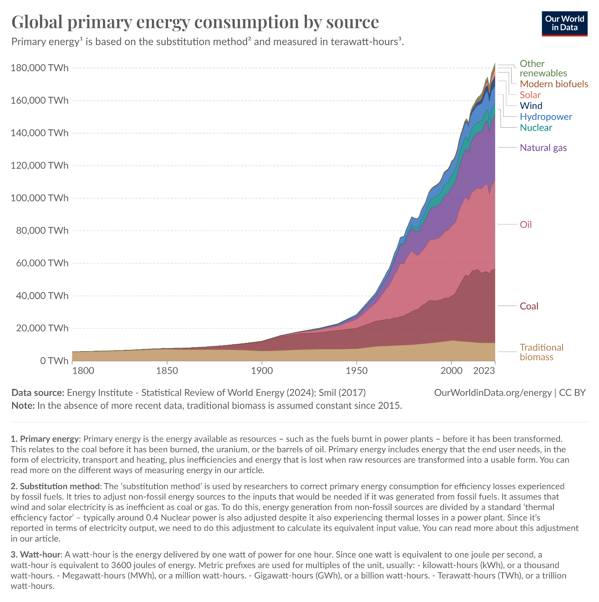
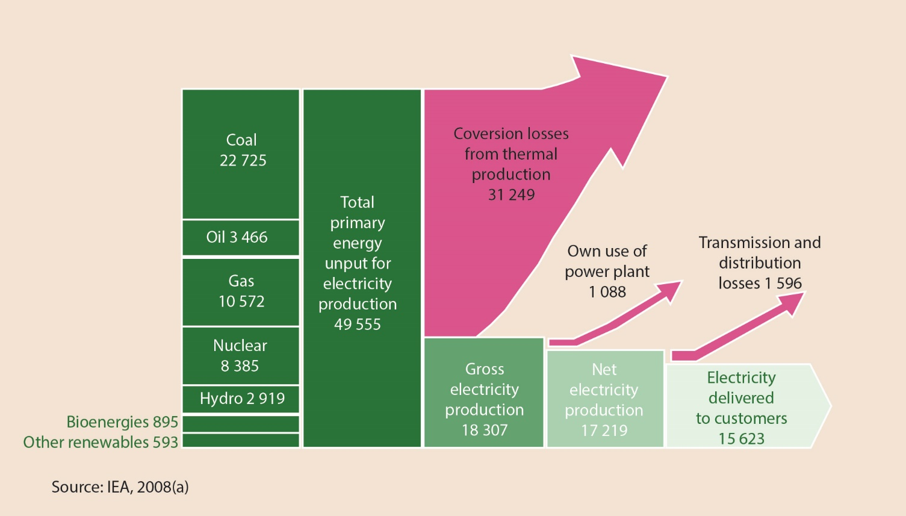
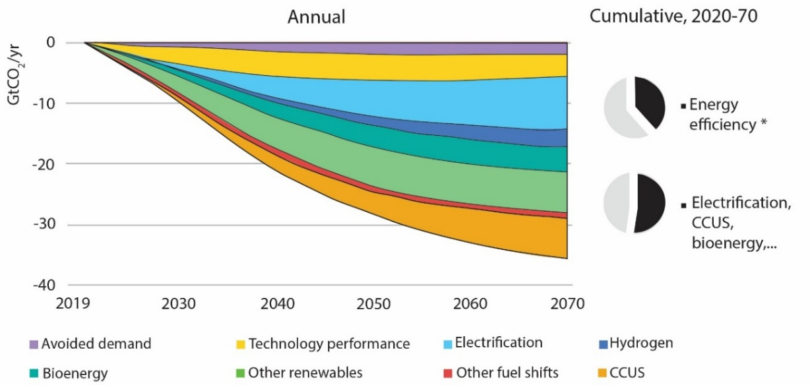
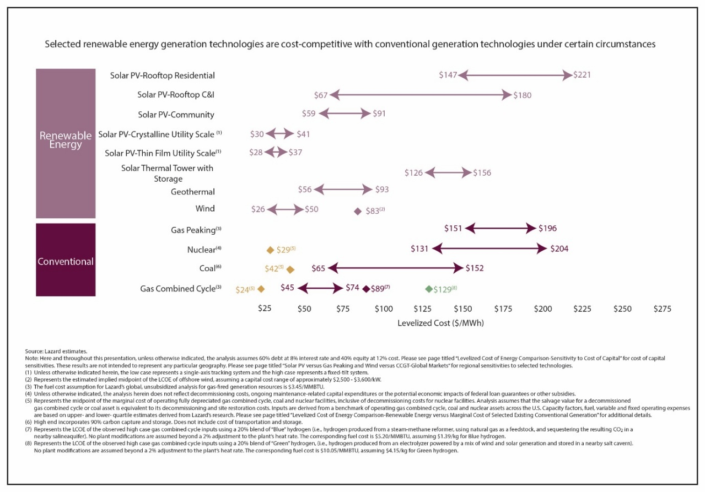
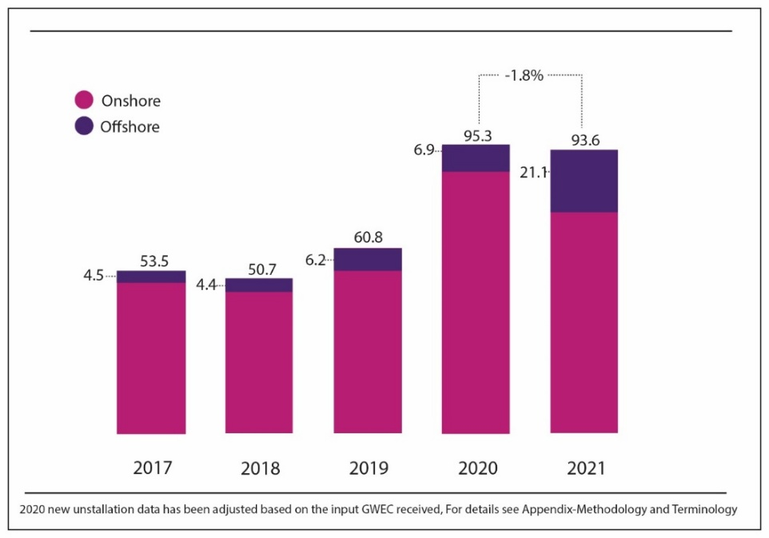
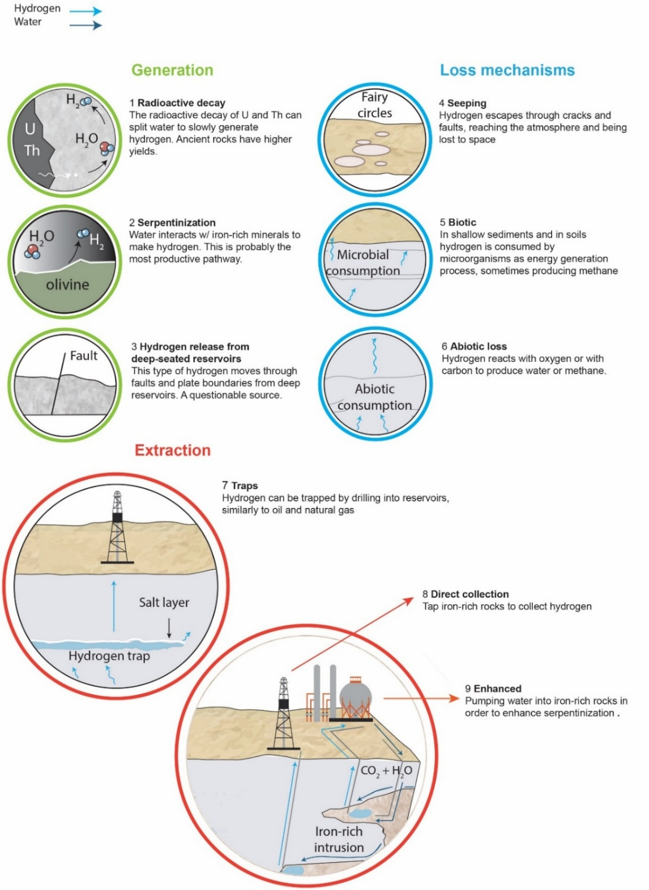
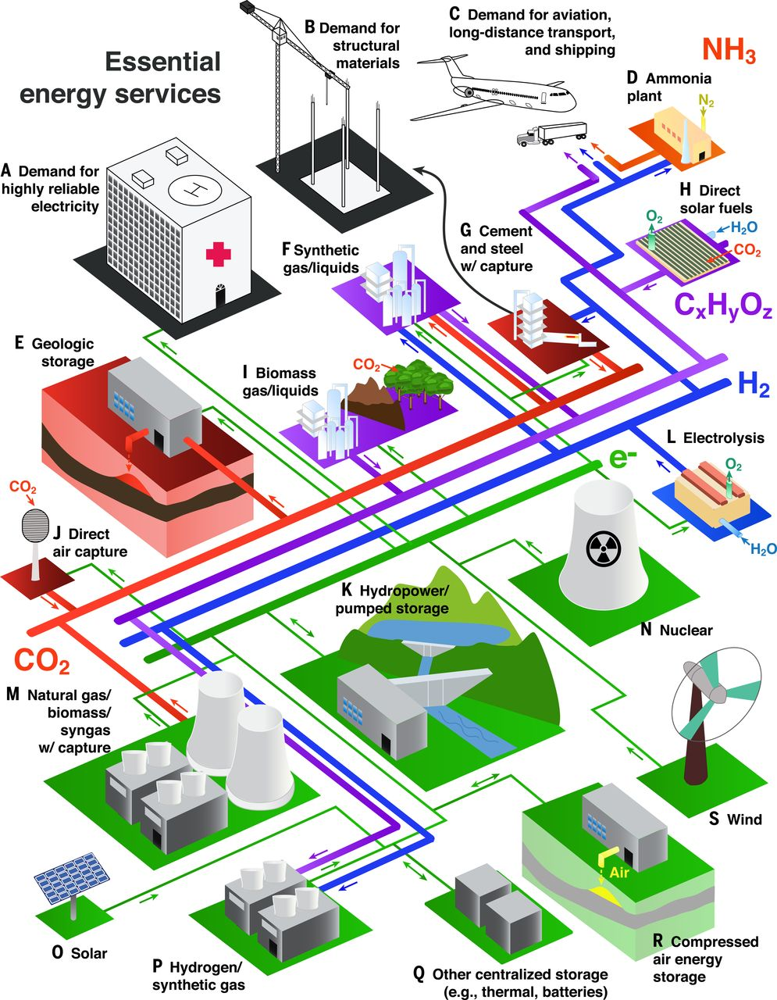

”Energy is the only universal currency:
One of its many forms must be transformed
to get anything done.“
Vaclav Smil, Energy and Civilization: A History
3. משק האנרגיה#
הפקת אנרגיה עומדת בבסיס הכלכלה העולמית וכמות מספקת של אנרגיה היא תנאי הכרחי לקיום אורח החיים המודרני. משחר ההיסטוריה ועד המהפכה התעשייתית במאה התשע עשרה, האנושות צרכה בעיקר אנרגיה שהופקה משריפת צמחים וגללים של בעלי חיים מבויתים, ובמידה פחותה מרוח וזרימת מים. מאז סוף המאה התשע עשרה ועד ימינו הכלכלה העולמית מתבססת בעיקר על אנרגיה המופקת מדלקים פוסיליים.[1] בהתחלה השתמשו בעיקר בפחם, לאחר מכן גם בדלק נוזלי ולאחרונה בגז (מתאן – \(\ce{CH4}\)) בכמויות הולכות וגדלות. בעשורים האחרונים מתרחש מעבר חלקי להפקת אנרגיה ממקורות חילופיים, כגון אנרגיה גרעינית, אנרגיה הידרואלקטרית, אנרגיה סולארית ואנרגית רוח. הפרק הנוכחי ידון במקורות האנרגיה השונים ובהשלכות הסביבתיות של השימוש בהם. נתחיל את הפרק בהצגת גודל האתגר (3.1), נסקור את השימוש בדלקים פוסיליים על כל ההשלכות לכך (3.2), נציג את מקורות האנרגיה החילופיים העיקריים והעתידיים (3.3) ונסיים עם כיווני ההתפתחות של משק האנרגיה העולמי (3.4).
גודל האתגר#
אנרגיה נמדדת ביחידות של ג’אול (Joule (J)) או וואט-שעה (Whr), אבל נוח יותר לדבר על הספק (אנרגיה ליחידת זמן, או ג’אול/שניה = וואט (W)). האנושות מייצרת[2] כיום הספק בסדר גודל של 20 TW (20x10^12^W) כך שאם ממירים זאת ליחידות אנרגיה מתקבלים מספרים גדולים שקשה לזכור (איור 3.1; טבלה 3.1):[3]
20TW = 20x10^12^W x 24 x 365 = 175,200 x10^12^Whr = 20x10^12^W x 24 x 365 x 3600 = 630.7x10^18^J.
כל מקור או שילוב של מקורות אנרגיה חילופיים צריכים לתת מענה לסדר גודל של יצירת הספק בהיקף של מספר TW, אחרת מדובר במקור ”בוטיק“, מקור אנרגיה שיכול להתאים ליישוב קטן או חוות בודדים, אבל לא לכלל האנושות. כמו כן, חשוב לציין שבמקביל למעבר מדלקים פוסיליים למקורות אנרגיה חלופיים, עולה חלקה היחסי של האנרגיה המופנית ליצור חשמל, זאת בשל המעבר למכוניות חשמליות ולמוצרים ביתיים ותהליכים תעשייתיים המבוססים על חשמל, מגמה שתלך ותתעצם בשנים הקרובות. לשם המחשה, האנרגיה ליצור חשמל בשנת 2017 היתה 17.6% ואילו ב-2023 היא היתה 20.6% מכלל האנרגיה שנצרכה על ידי האנושות.[4] גורם נוסף המגדיל בהתמדה את צריכת האנרגיה שלו הם השרתים ומערכות החישוב של תעשיית ההיי-טק (בעיקר מרכזי AI),[5] והצפי הוא שצריכת האנרגיה הזאת תלך ותגדל ככל שיכולת החישוב תתפתח ויתרחב השימוש בלימוד מכונה וב-AI.
{kind=link}

Fig. 17 טבלה 3.1: צריכת וייצור אנרגיה בעולם מ-1980 ועד 2024. הפער בין ייצור לצריכה נובע מאיבוד אנרגיה, בעיקר חום שנפלט לסביבה בזמן הייצור, וכן הפסדים בזמן הולכת האנרגיה ממקום הייצור אל הצרכנים. ייצור חשמל מתחלק בין הצרכנים השונים: תעשייה, תחבורה, מגורים, חקלאות. TPES = Total Primary Energy Supply; TFC = Total Final Consumption#
Sources: https://ourworldindata.org/grapher/primary-energy-consumption-by-source.csv; https://www.iea.org/data-and-statistics/data-product/world-energy-balances
דלקים פוסיליים#
דלקים פוסיליים (פחם, דלק נוזלי גולמי וגז – בעיקר מתאן)[6] נוצרו במשך מיליוני שנה (בעיקר מלפני כ-350 מיליוני שנה ועד ההווה) משרידי מיקרואורגניזמים, בעלי חיים וצמחים שנקברו בסדימנט[7] בטרם הספיקו להתחמצן ולהפוך לפד“ח (פחמן דו חמצני – \(\ce{CO2}\)). לאחר קבורתם הם עברו תהליכים ביולוגיים וכימיים בטמפרטורות נמוכות (דיאגנזה, עד 50 מעלות צלזיוס) ללא נוכחות חמצן, ויצרו גאו-פולימרים[8] כגון חומצות הומיות וקרוגן.[9] לאחר מכן, גאו-פולימרים אלו עברו תהליך של ”הבשלה“ (קטגנזה - catagenesis),[10] הכוללת סדרה ארוכה של ריאקציות כימיות בתנאים של לחץ וטמפרטורה גבוהים (200 עד 1000 אטמוספרות, 50 עד 200 מעלות צלזיוס) במשך זמן ארוך (מיליוני שנים). כל התנאים הללו הם נדירים יחסית, ולכן קצב היווצרותם של דלקים פוסיליים הוא איטי ביותר ביחס לקצב השריפה שלהם כיום, ודלקים פוסיליים נחשבים למשאב מתכלה.
הדינמיקה של שימוש בדלקים פוסיליים (כמו במשאבים מתכלים אחרים) תוארה על ידי מאריון הוברט (Hubbert) בהרצאה שנשא ב-1956.[11] בין היתר, הוא טען שעקומת הצריכה של דלק פוסילי, כמו של כל משאב טבעי מתכלה, נראית כמו עקומת פעמון, כלומר בהתחלה קצב ההפקה וקצב הצריכה עולים עם הזמן עד ששניהם מגיעים לערך מירבי, ואז כשמרבית מאגר הדלק מנוצל, קצב ההפקה וקצב הצריכה פוחתים עד שהמשאב מתכלה או שנמצא לו תחליף. מבחינה סביבתית מצב זה של ניצול כל המאגר של הדלקים הפוסיליים אינו רצוי, בלשון המעטה, בגלל מספר סיבות. ראשית, שריפת דלקים פוסיליים גורמת לקשת רחבה ביותר של מפגעים סביבתיים,[12] שנית, דלקים פוסיליים נחוצים כחומר גלם לשורה רחבה של מוצרים (נדון בכך בפרק 4). כמו כן, כריה והובלה של דלקים פוסיליים גורמת לנזקים סביבתיים בקנה מידה גדול (למשל שפך הניז’ר באפריקה)[13] ועלולה לגרום לתאונות שנזקן הסביבתי גדול מאד (למשל, במפרץ מקסיקו ב-2015 ואקסון וולדז ב-1989).[14] בהקשר זה ראוי לציין את הנושא של ”שבירה הידראולית“ (fracking)[15] – שיטה להגברת התפוקה של בארות נפט וגז שגם לה יש השלכות סביבתיות (וסיסמיות) מדאיגות.[16] חשוב מאד להדגיש ששריפת דלקים פוסיליים גורמת לזיהום אוויר המהווה אחד מגורמי התחלואה והמוות העיקריים (נדון בכך בפרק 11). וכמובן, שריפת דלקים פוסיליים תורמת כשלושה רבעים מפליטת פד“ח של האנושות,[17] תרומה העולה בסדרי גודל על קצב פליטתו ממקורות טבעיים (נרחיב על הנושא בפרק 5). לאור כל הסיבות הללו יש למצוא תחליפים לדלקים פוסיליים ובהקדם. הבעיה העיקרית היא סדר הגודל של האתגר הזה, בייחוד לנוכח הפער המשמעותי בזמינות אנרגיה ובצריכת אנרגיה לנפש בין אזורים שונים על פני כדור הארץ וכן בזמינות המידע על פליטות גזי חממה באזורים שונים.[18]
היררכיה של דלקים פוסיליים#
גם בתוך דלקים פוסיליים קיימת שונות מבחינת ההשפעה הסביבתית שלהם (טבלה 3.2). כך למשל, כ-50% מהפחם המופק בעולם הוא פחם מסוג ירוד יחסית (lignite, sub-bituminous). פחם מסוג זה פחות יעיל אנרגטית (מחמם פחות ופולט יותר פד“ח ליחידת משקל, טבלה 3.2),[19] ולעיתים הוא מכיל ריכוזים גבוהים של גופרית ויסודות מזיקים אחרים הפוגעים באיכות האוויר (נרחיב על כך בפרק 11). כך גם לגבי שריפת גז טבעי (בעיקר מתאן). אמנם שריפת גז טבעי מלווה בשחרור נמוך משמעותית של מזהמים שונים בהשוואה לשריפת פחם והיא יעילה יותר מבחינה אנרגטית, אך יחד עם זאת, גם שריפת מתאן משחררת פד“ח לאטמוספרה. בנוסף, דליפות של אחוזים בודדים של מתאן מאתרי ההפקה ומצינורות ההובלה שלו (תופעה שכיחה ביותר) אל תחנות הכוח יכולה להטות את הכף מבחינת הנזק שהוא גורם למאזן גזי החממה משום שהוא גז חממה יעיל הרבה יותר מפד“ח בריכוזים הנוכחיים.[20] גם סוגים שונים של דלק נוזלי (e.g., gasoline, diesel, kerosene, liquefied petroleum gas - LPG) מכילים כמויות שונות של חומרים מזיקים הנפלטים לסביבה בעת שריפתם (ראו פרק 11).
שיפור היעילות של שריפת דלקים פוסיליים#
לפני שנדון בחלופות לדלקים פוסיליים ובהיבטים הסביבתיים הכרוכים בכך, חשוב לציין שניתן לייעל משמעותית את השימוש בדלקים פוסיליים להפקת אנרגיה ולהוריד את פליטת המזהמים שלהם, כולל פד“ח. היעילות של תחנות כוח קונבנציונליות השורפות דלקים פוסיליים להפקת חשמל נעה בין 30% ל-40%: כמות האנרגיה החשמלית המגיעה לצרכן חלקי האנרגיה שהושקעה בשריפת הדלק, לא כולל האנרגיה שהושקעה בכריית והובלת הדלק. לפי חישובי ה-IEA משנת 2008, מכל 50 יחידות אנרגיה שהושקעו ביצירת חשמל, בעיקר בתחנות כוח השורפות פחם, דלק נוזלי וגז ובנוסף תחנות כוח גרעיניות, הידרואלקטריות ואחרות, הגיעו לצרכן כ-16 יחידות אנרגיה, כלומר יעילות של 32% (איור 3.2). דרך אחת לשפר את יעילות הפקת החשמל היא באמצעות מעבר לסוגי דלק פוסיליים יעילים יותר (למשל גז במקום פחם).[22] רוב אובדן האנרגיה הוא בשלב של המרת האנרגיה התרמית לאנרגיה חשמלית בתחנת הכוח, והוא נובע מנצילות תרמודינמית נמוכה של המרת חום לחשמל. לכן, בשנים האחרונות התחילו להשתמש ב“מעגל משולב“ (combined cycle / combined heat and power - CHP),[23] שבו היעילות עולה ל-62%.[24] יעילות זאת מהווה כ-85% מהחסם התרמודינמי של מעבר האנרגיה בתחנת הכוח, כלומר שאין עוד כר נרחב לשיפור הניצולת האנרגטית. ב“מעגל המשולב“ נבנית תחנת כוח נוספת הפועלת באמצעות קיטור שנוצר מהמים שהתחממו מהחום שנפלט מהתחנה המקורית (השורפת דלק פוסילי). הקיטור מניע טורבינות לייצור חשמל. גם כורי ביקוע גרעיני מתקדמים (ראו בהמשך) המגיעים לטמפרטורה גבוהה יאפשרו מעגל משולב והם אמורים להגיע לנצילות של כ-80%. בנוסף ל“מעגל המשולב“, המגמה בימינו היא לשפר גם את היעילות האנרגטית של משתמשי הקצה, למשל, שיפור היעילות של מכשירים בשימוש יומי, ביתי ומשרדי כגון, חימום מבנים (מעבר לשימוש במשאבות חום), תאורה (LED), ומכוניות עם מנוע שריפה פנימית (בהן הניצולת העכשווית היא כ-30%).
{kind=link}

Fig. 18 איור 3.2: סכמה של איבוד אנרגיה בתהליך ייצור חשמל בדרך מתחנת הכוח אל הצרכנים. יחידות - TWh. מקור – IEA (2008). IEA, CC BY 4.0; Reprinted with permission.#
סילוק מזהמים ולכידת פד“ח#
דרך נוספת לצמצום ההשפעה הסביבתית של שימוש בדלקים פוסיליים היא באמצעות סילוק המזהמים הנפלטים בזמן שריפתם (חלקיקים מרחפים (PM), גופרית (בעיקר \(\ce{SO2}\)), חנקן (בעיקרNOx = NO + \(\ce{NO2}\)), מתכות רעילות, בעיקר כספית Hg; ראו פרוט בפרק 11), תרכובות אורגניות (למשל PAH),[25] ופד“ח (\(\ce{CO2}\) sequestration – ראו בהמשך). הטכנולוגיות לסילוק כל המזהמים זמינות ומופעלות בתחנות כוח רבות ברחבי העולם, אם כי לא ברובן. התקנתן מייקרת את מחיר השימוש בדלקים פוסיליים ולכן לרוב אינה נובעת מיוזמה עצמאית של הרשויות וחברות החשמל, אלא בעיקר בעקבות הפעלת לחץ של הציבור ושל גופים ירוקים הגורמים לשינוי בחקיקה.
פיתוח הטכנולוגיה לסילוק פד“ח הוא נושא הנמצא כיום בחזית המחקר הסביבתי,[26] אולם הדרך עוד ארוכה עד שסילוק פד“ח יגיע לרמה הדרושה לאיזון הכמויות הנפלטות כיום על ידי האנושות (מעל 10 גיגה-טון פחמן בשנה שהם כ-40 גיגה-טון פד“ח).[27] כיום בוחנים בצורה אקטיבית את החלופות השונות לסילוק פד“ח כולל בחינת העלות האנרגטית, הסביבתית והכלכלית שלהן.[28] בצורה הכללית ביותר מחלקים את הנושא לשניים: (1) תפיסה והטמנה של פחמן (CCS - Carbon Capture and Storage).[29] הכוונה לתפיסה של פד“ח מזרם פליטה של תחנות-כוח (או של מפעלים או במהלך הפקת גז טבעי) השורפים דלקים פוסיליים וקבורתו במאגרים גאולוגיים שונים או בים העמוק (ראו למטה). (2) סילוק פחמן אטמוספרי (CDR - Carbon Dioxide Removal)[30] והטמנתנו.[31] הכוונה לתפיסת פד“ח מהאטמוספרה. יש גם המדברים על לכידת פחמן, שימוש והטמנה (CCUS - carbon capture, utilization and storage), ומתייחסים הן ל-CCS והן ל-CDR. לכל חלופה יש מחיר סביבתי שחייבים לשקול, ובכולן קיימת אי-וודאות לגבי הצלחת המעבר מניסויים בקנה מידה קטן ללכידת פד“ח בקנה מידה משמעותי. למשל, בשנים האחרונות התעורר ויכוח לגבי הפוטנציאל, התועלת והמחיר של נטיעת עצים כמסלקי פחמן מהאטמוספרה כולל הטמנה של שברי עץ בקרקע על מנת להאט את חמצונם.[32] בפרקים 6 ו-8 יש דיון נוסף על נטיעת עצים במסגרת CDR, ובפרק 2 יש דיון בקיבוע פד“ח בקרקע על ידי גידולים חקלאיים. ניתן להטמין פד“ח בשלוש סביבות עיקריות: בתת-הקרקע, בפני השטח או בים הפתוח. ההטמנה בתת-הקרקע[33] (בעיקר CCS) אפשרית (1) במאגרי נפט או גז טבעי מדולדלים כפאזה סופר-קריטית,[34] בעלת צמיגות של גז וצפיפות של נוזל, או כחלק מתגבור ההפקה של נפט או גז; (2) במי תהום מלוחים הנמצאים בחללים של סלעים בזלתיים[35] כפד“ח המומס במים[36] או הנמצא בפאזה סופר-קריטית; (3) במרבצי דלק פוסילי בלתי מנוצלים.[37] ההטמנה בתת-הקרקע נעשית ביבשה או בשוליה (בתת-הקרקע של הסביבה הימית), ובכל מקרה היא מחייבת התמודדות עם הריאקציות שהפד“ח יוצר עם המדיום אליו הוא מוחדר.[38] זהו סוג של זרימה ראקטיבית (reactive transport) שאליה נתייחס גם בפרק 9.
ההטמנה בפני השטח (הן CCS והן CDR) נעשית באמצעות ריאקציות כימיות (enhanced weathering and mineralization - EWM)[39] של פד“ח גזי עם חומרים שונים כגון סלעים מאפיים ואולטרה-מאפיים[40] שיכולה להיעשות גם בעומק של כמה עשרות או מאות מטרים (כלומר בתת הקרקע), על ידי הוספת סלעי בזלת טחונים לקרקעות חקלאיות,[41] וכן עם חומרי בניה (בטון, מלט מסוגים שונים, ועוד),[42] אפר פחם, סיגי מתכת ושאריות של מכרות.[43] באופן כללי, ריאקציות אלה הופכות את הפד“ח הגזי לקרבונט הנמצא בפאזה המוצקה (סוג של CCUS). יש גם ספרות ענפה העוסקת בסילוק פחמן אטמוספרי (CDR) על ידי הוספת מטחן של מינרלים סיליקטיים והגברת הבליה שלהם בקרקעות חקלאיות וצבירת קרבונט בקרקעות.[44] כמו כן, ישנן הצעות לפעול בכיוון של חיזור הפחמן הנמצא בפד“ח והפיכתו לפחמן מוצק או נוזלי שמשמש כדלק או כחומר גלם,[45] בין היתר על ידי ננו-חלקיקים, פחם ועוד.[46] לאחרונה עלה עניין בשימוש בממברנות סלקטיביות להפרדה של פד“ח מחנקן וחמצן שהם מרכיבי האוויר העיקריים (במסגרת CDR או DACC).[47] השיטה נמצאת עדין בחיתוליה, אולם לכמה סוגי ממברנות נראה שיש פוטנציאל מבטיח. השיטה שנראית היום כמובילה את תחום ה-CDR, ושעליה גם זכו שלושה מדענים בפרס נובל בכימיה בשנת 2025, היא ספיחת פד“ח על מארג של פולימרים פורוזיים העשויים ממאספים (clusters) של יונים מתכתיים עם מולקולות אורגניות טעונות שלילית (metal–organic frameworks - MOFs) ואף יותר מכך ספיחה על ידי מסגרות קוולנטיות ־ אורגניות (covalent organic frameworks - COFs).[48] הבעיה העיקרית עם כל שיטות ה-CDR הוא גודל האתגר. כדי לסלק כשליש מכמות הפד“ח באטמוספרה יש לשאוב דרך מתקני הסילוק כשליש מנפח האטמוספרה, כ-1,700 ק“מ מעוקב של אוויר, מספר גדול מאד לכל הדעות.
הטמנה בים הפתוח אמורה להיעשות (בעיקר CCS) על ידי פיזור פד“ח-הידראט בעומק של אלפי מטר וצבירתו בקרקעית הים או הטמנתו בתת-הקרקע של הים, וכן על ידי הגברת הקליטה של פד“ח (בעיקר CDR) על ידי מי האוקיינוסים (ocean fertilization/alkalinization), נושא זה יידון בפרק 10. חשוב לזכור שיש פער גדול בריכוז פד“ח בתהליך של CCS (כ-10% מנפח הגז הנפלט בארובות) לעומת CDR (כ-0.04% מנפח האוויר) וכתוצאה מכך יש פער גדול בגודל המתקן הדרוש, בצריכת האנרגיה ובהשקעה הכספית לסילוק יחידת משקל זהה של פד“ח. העלויות של הטכנולוגיות הקיימות לסילוק CDR הן כמה מאות דולר לטון פד“ח,[49] כלומר סילוק סדר גודל של מספר גיגה(מיליארד)-טון פד“ח בשנה יכול לעלות מאות מיליארד דולר. יתכן שמצב זה ישתנה עם התפתחות הטכנולוגיה או עם מציאת דרכי יישום חדשות.[50]
הגברת היעילות של שריפת דלקים פוסיליים וסילוק פד“ח אמורים לתרום ביחד עם הגברת השימוש במקורות אנרגיה חילופיים את חלק הארי בהפחתת הפליטות של גזי חממה בעשורים הקרובים (איור 3.3). תמונה זו נכונה הן לגבי ייצור חשמל והן לגבי תעשיות עתירות אנרגיה כמו ייצור מלט, פלדה וכימיקלים (למשל ייצור אמוניה לדשן חקלאי). חשוב להדגיש שייצור מלט וייצור פלדה בשיטות המקובלות פולטים פד“ח ללא תלות במקור האנרגיה (ראו הרחבה בפרק 4).
עד כה התמקדנו בצרכני אנרגיה פוסילית נייחים (למשל תחנות כוח). השימוש באנרגיה בתחבורה יבשתית, ימית ואווירית אחראי לכ-27% מצריכת האנרגיה הגלובלית.[51] רוב האנרגיה הנצרכת על ידי כלי תחבורה מופקת משריפת דלקים פוסיליים (כ-75%),[52] הן במכוניות עם מנועי שריפה פנימית והן במכוניות חשמליות המוטענות באמצעות חשמל המופק ברובו בתחנות כוח השורפות דלק פוסילי. בנוסף, כל התחבורה האווירית ומרבית התעבורה הימית מונעות על ידי מנועים השורפים דלקים פוסיליים ופולטים גזי חממה,[53] אם כי לאחרונה יש כמה התפתחויות מעניינות בתחום.[54] מקורות ניידים מהווים בעיה סביבתית קשה יותר מבחינת סילוק מזהמים לעומת מקורות נייחים, ולכן המעבר למכוניות חשמליות, גם כאשר החשמל מופק מדלקים פוסיליים, מהווה שיפור מבחינת פיזור מזהמי אוויר.[55] זאת למרות העובדה שמכוניות חשמליות מזהמות את האוויר עקב שחיקת הצמיגים שלהן (ראו פרק 4). נחזור לדיון על זיהום הסביבה בעקבות השימוש בדלקים פוסיליים ממקורות נייחים וממקורות ניידים בפרקים 5, 9 ו-11.
{kind=link}

Fig. 19 טבלה 3.3: הערכה של נתוני הספק המופק כיום, ושניתן להפיק באמצעים הקיימים מכל אחד ממקורות האנרגיה החילופיים. מקורות המידע בגוף הטבלה (טור רביעי מימין). ההבדלים בין ההערכות ממקורות שונים נובעת מצורת החישוב (https://ourworldindata.org/energy-substitution-method ). מקור -#
IEA (2020) https://www.iea.org/reports/ccus-in-clean-energy-transitions/ccus-in-the-transition-to-net-zero-emissions#abstract, CC BY 4.0; Reprinted with permission. CCUS - carbon capture, utilization and storage
מציאת תחליפים לדלקים פוסיליים – אתגרים ומחסומים#
נעשים כיום מאמצים רבים להחליף את האנרגיה הפוסילית באנרגיות חילופיות. בהקשר זה ראוי לשים לב לאנליזות של ווסלב סמיל (Smil).[56] בספרו מ-2017 הראה סמיל כי מעברים מסוג דומיננטי אחד של מקור אנרגיה למשנהו אורכים זמן רב (”אינרציה של מקורות אנרגיה“). הוא דן בשלושה מעברים כאלה שהתרחשו בעבר: מעבר משריפת עצים לשריפת פחם, מעבר משימוש בפחם לדלק נוזלי, ומעבר משריפת דלק נוזלי ופחם לגז. הוא הראה שהשלמת מעבר דורשת כ-75-50 שנה. לכן, הוא חושב שהשאיפה לעבור כבר בעשורים הקרובים ממקורות פוסיליים למקורות מתחדשים היא מאד לא סבירה. מעבר לכך, הוא מצביע על כך שעד כה הייתה מגמה של הגדלת ייצור אנרגיה ליחידת שטח (הגדלת צפיפות האנרגיה) ואילו המעבר מדלקים פוסיליים לאנרגיה סולארית או אנרגיית רוח צועד בכיוון ההפוך, כלומר למעבר הזה יהיה מִדְרך אקולוגי גדול מבחינת שטחים פתוחים, שינוי שעלול להקשות על המעבר. במאמר שפורסם ב-2021 טענו חוקרים שמעבר מואץ לשימוש במקורות אנרגיה מתחדשים ייצור בעיות כלכליות ופיננסיות ויתרום לאי-יציבות של המשק.[57] מצד שני, במאמר שפורסם שנה לאחר מכן טוענים המחברים שלמעבר מהיר למקורות אנרגיה חילופיים יש יתרון משמעותי לעומת מעבר איטי והדרגתי,[58] ועל כך נרחיב בהמשך.
בשנים האחרונות נעשו מספר אנליזות על ידי קרן המטבע העולמית (IMF) שהראו כי סיבה נוספת לקצב האיטי של המעבר לאנרגיות חילופיות היא הסובסידיה הגדולה שניתנת כיום לשימוש בדלקים פוסיליים.[59] להערכת המחברים, בשנת 2017 הסתכמו הסובסידיות הישירות לכריה של דלקים פוסיליים בסכום של כ-400 מיליארד דולר, כחצי אחוז מהתמ“ג העולמי,[60] ואילו ה“סובסידיות“ העקיפות (environmental externalities - global warming, local air pollution-mortality) היו כ-5 טריליון דולר, השקולים ל-6.5% מהתמ“ג העולמי. המוטיבציה לסובסידיות הללו נובעת כנראה משיקולים קצרי מועד של מתן תמריצים לכלכלה העולמית תלוית הצמיחה ומלחצים של בעלי ענין.[61] הערכה דומה של הסובסידיות הניתנות לדלקים פוסיליים ולמפגעים סביבתיים אחרים הופיעה בדוח של Earth Track משנת 2024.[62] המאבק שניהלו חברות האנרגיה במעבר לאנרגיות חילופיות, כולל הסתרת מידע מהציבור, האט גם הוא את קצב הנטישה של דלקים פוסיליים.[63] ראו גם את הדיון בנושא בפרק 6. ניסיונות להפחית את השימוש בדלקים פוסיליים כמו ”Cap-and-trade“ נידונו לכישלון בגלל התנגדות בעלי עניין, כפי שיפורט בפרק הסיכום (פרק 13).[64] סיבה נוספת לקושי בהורדת השימוש בדלקים פוסיליים הוא ”פרדוקס ג’בונס“, עליו נרחיב בפרק 4.[65]
אי אפשר לסיים את הדיון על דלקים פוסיליים בלי לחזור ולדון בעבודתו של הוברט (Hubbert). כבר בשנות החמישים של המאה הקודמת הבין הוברט את הסכנה הטמונה בכלכלה החייבת לצמוח באופן מעריכי (גידול הנמדד באחוזים (%) - ראו הסבר בפרק המבוא).[66] הוא טען שכמות הדלק הפוסילי המופקת מידי שנה תיראה בסופו של דבר כמו עקומת פעמון, כאשר שיא העקומה מסמל את תחילת המחסור בדלק שיחייב חיפוש אחר משאב אחר שיניע את הכלכלה. זאת כיוון שהכלכלה העולמית מקדשת צמיחה מעריכית שמגדילה מצד אחד את הביקוש לחומרי גלם ולמקורות אנרגיה מידי שנה, ומצד שני מתבססת על דלק שהוא משאב מתכלה שכמותו סופית. מאוחר יותר הראו אחרים שניתן להרחיב את האנליזה של הוברט לכל משאב מתכלה, כמו מחצב של חומר מסוים.[67] האנליזה של הוברט זכתה לתומכים רבים אך גם לביקורת לא מעטה. אחת הביקורות נבעה מהעובדה ששיטות ההפקה של דלק (ושל מחצבים אחרים) אינן קבועות ומשתפרות כל הזמן, מה שמקשה על היכולת לנבא את תזמון ההגעה לשיא ההפקה ואת הכמות הכללית אותה ניתן להפיק.[68] כלומר, המונח ”כמות סופית“ הופך להיות תיאורטי.
מקורות אנרגיה חילופיים#
הדיון על חלופות לאנרגיה פוסילית יתמקד רק במקורות אנרגיה שלהם יש יכולת לתרום משמעותית למשק האנרגיה העולמי (כלומר, אחוז משמעותי מ-20 TW המיוצרים כיום; טבלה 3.3),[69] ועל כן נתמקד במקורות הבאים: אנרגיה גרעינית (ביקוע), גאו-תרמית, הידרו-אלקטרית, ביו-דלקים, סולארית ורוח. סקירה מקיפה יותר של נושא האנרגיות החילופיות ואגירת אנרגיה נמצא באתר של אוניברסיטת סטנפורד.[70] בסוף הפרק נדון בקצרה בהפקת מימן ממאגרים גיאולוגיים ובאנרגיה גרעינית מהיתוך של אטומי מימן, תחומים הנמצאים בחיתוליהם אולם נושאים בחובם פוטנציאל גדול מאד לשנות מן היסוד את משק האנרגיה העולמי.
מחיר ייצור אנרגיה על ידי החלופות השונות הוא מדד חשוב להערכת הפוטנציאל הגלום בכל אחת מהן. ראוי לציין, שמחיר ייצור האנרגיה תלוי מאד בצורת החישוב ובפיתוחים טכנולוגיים ולכן יש לבחון אותו מידי זמן. על מנת לבצע חישוב מושכל של עלות ייצור אנרגיה (במקרה שלפנינו - חשמל) מקובל להשתמש במדד ה-LCOE (Levelized Cost of Electricity)[71] המתחשב בהוצאות הקמה, תפעול, תחזוקה ודלק לעומת כמות החשמל המופקת במהלך כל שנות התפעול. אנליזה עדכנית של ערכי LCOE של מקורות אנרגיה פוסיליים ואחרים מתפרסמת מידי פעם. דוגמא לחישוב כזה מופיעה באיור 3.4.
כפי שמוצג באיור 3.4, חלק משיטות ייצור אנרגיה סולארית ורוח, מתחרות עם דלקים פוסיליים בעלות ייצור חשמל, בעיקר בגלל פיתוחים טכנולוגיים בעשור האחרון. עם זאת, חשוב להדגיש שהעלות איננה כוללת עלות אגירת אנרגיה, מחזור סוללות (ראו פרק 4 – ליתיום), שיקום אתרי כרייה וכן קווי הולכה ארוכים במיוחד (אשר רלוונטיים בעיקר לאנרגיות מתחדשות).[72] כמו כן ראוי לציין שההערה באיור 3.4 לגבי העדר סובסידיות מתייחסת כנראה רק לסובסידיות ישירות. מעבר לעלות, ישנם כיום מחקרים רבים המצביעים על כך שאנרגיות חליפיות משפרות את העמידות (resilience) של מערכת הספקת החשמל.[73]
ראשית נדון באנרגיה גרעינית (ביקוע) שאיננה מבוססת על מקורות אנרגיה מתחדשים. לאחר מכן נסקור אנרגיה גאו-תרמית שבה חלו התפתחויות דרמטיות בשנים האחרונות, וכן אנרגיה שמקורה בביו-דלקים ואנרגיה הידרו-אלקטרית הנמצאות בשימוש כבר זמן רב, אבל כפי שנראה בהמשך, הפוטנציאל שלהן קרוב למיצוי. נרחיב על אנרגית רוח ואנרגיה סולארית, שתרומתן למאזן האנרגיה העולמי כיום עדין קטנה, אולם הפוטנציאל שלהן גדול. לאחר מכן נדון באגירת אנרגיה, נושא רלוונטי במיוחד עבור אנרגית רוח ואנרגיה סולארית. נסיים עם מקורות אפשריים של אנרגיה שיש להם פוטנציאל גדול אבל אינם ממומשים עדין (היתוך גרעיני ומימן גיאולוגי).
{kind=link}

Fig. 20 איור 3.4: LCOE (דולר למגה-וואט שעה) כפי שחושב על ידי LAZARD. שימו לב לערכים התחרותיים של אנרגיית רוח ושל PV ברמת ה-utility scale. על פי - LAZARD#
אנרגיה גרעינית – ביקוע#
השימוש באנרגיית ביקוע גרעיני הוא אחד הנושאים הטעונים ביותר בדיון על אנרגיות חלופיות לדלקים פוסיליים.[77] סקירה מקיפה של הנושא נמצאת באתרים של משרד האנרגיה האמריקאי והאגודה הבינלאומית לאנרגיה גרעינית.[78] השיטה מתבססת על בליעת נויטרונים בגרעינים של איזוטופ בקיע כמו U^235^ או ^239^Pu הגורמת לתגובת שרשרת של ביקועים גרעיניים, תגובה הגורמת לפליטת חום רב.[79] החומר הבקיע היחיד שנמצא בטבע ומייצר תגובת שרשרת הוא איזוטופ של אורניום שמשקלו 235 (U^235^). כיוון שהאורניום המצוי בטבע מכיל רק כ-0.7% אורניום 235, צריך להעשיר את ריכוזו באורניום עד לריכוז של מספר אחוזים (כ-4.5% אורניום 235) כדי להשיג תגובת שרשרת של ביקועים הדרושה להפעלת כורים המקוררים במים – מרבית כורי-הכוח הפועלים כיום. כורים המשתמשים במים כבדים - \(\ce{D2O}\), ובחומרים נוספים (ראו למטה) יכולים להשתמש באורניום טבעי. כיום פועלים בעולם כ-440 כורים גרעיניים לייצור אנרגיה שרובם פועל כבר עשרות שנים. יש כ-55 כורים נוספים בשלבי בניה והם אמורים להיכנס לפעולה בשנים הקרובות, אם כתוספת או כתחליף לחלק מהכורים הישנים שיושבתו.[80] במהלך השנים היו מספר תאונות בכורים גרעיניים שעוררו בציבור התנגדות גדולה לשימוש באנרגיה גרעינית לייצור חשמל (Three-Mile Island ב-1979, צ’רנוביל ב-1986, ופוקושימה ב-2011).[81] חשוב לציין בהקשר זה שרוב מקרי המוות היו בצ’רנוביל, אבל גם בפוקושימה היו מספר נפגעים. לאחרונה גם דווח ששריפות יער באזור צ’רנוביל גרמו להפצה של איזוטופים רדיואקטיביים באגן ההיקוות שלו.[82] יחד עם זאת, מספר הנפגעים ליחידת חשמל המופקת משימוש בדלקים פוסיליים גדול בהרבה מאשר מספר הנפגעים ליחידת חשמל המופקת בכורי ביקוע.[83] אנחנו נחזור לנקודה זאת בפרק 11.
מרבית הכורים הפעילים כיום מתבססים על אורניום מועשר. כלומר, הם מנצלים פחות מ-1% מהערך האנרגטי של האורניום במכרה, שרובו מכיל אורניום 238, ובכולם מצטברים שני סוגים של פסולת רדיואקטיבית בעלת פוטנציאל גדול למפגעים סביבתיים (fission products & trans-U waste).[84] עד כה רק בפינלנד קיים מתקן לאכסון ארוך טווח של פסולת רדיואקטיבית.[85] יחד עם זאת חשוב לציין שאין בספרות דיווחים על נזקים בפועל מפסולת גרעינית, ורוב החשיפה של בני אדם לקרינה רדיואקטיבית מגיעה מאבחון רפואי וטיפולים בהקרנות שתועלתם עולה על הסכנה. כמו כן, כרייה של אורניום יוצרת מפגעים סביבתיים עקב תשטיפים של פסולת המכרה המועשרים באורניום ובמתכות רעילות נוספות, אם כי ראוי לזכור כי גם כרייה של דלקים פוסיליים מלווה בנזק סביבתי ובשחרור של חומרים רעילים, כפי שכבר צוין לעיל. בחמישים השנים האחרונות נבחנה גם האפשרות להפיק אורניום ממי ים בכמויות שיספקו את צרכי האנרגיה של האנושות אלפי שנים קדימה.[86]
בשנים האחרונות נמצאים בפיתוח כורים מתקדמים (עד כה הגענו לדור 4) שתפעולם אמור להתמודד עם הבעיות הבטיחותיות והסביבתיות שגורמים הכורים מהדורות הקודמים.[87] מרבית הכורים מהדור הרביעי הם ”כורים דוגרים“[88] והם אינם צריכים אורניום מועשר, מה שיאפשר ניצול של למעלה מ-90% מהאורניום שנכרה, וכן ניתן להשתמש בפסולת שלtrans-U שנותרה בכורים ישנים ובכך להפחית משמעותית את הצורך באורניום מועשר.[89] יחד עם זאת חלק מכורי הדור הרביעי אינם ”דוגרים“, וגם הם יצטרכו להתבסס על אורניום מועשר. חסרונם העיקרי של כורים דוגרים הוא שהם מחייבים לבצע הפרדה של החומר המסוכן הנוצר בכור (reprocessing),[90] ושהם מייצרים כמות גדולה של פלוטוניום (^239^Pu) שיכול לשמש לייצור נשק גרעיני. כיוון מבטיח נוסף הוא בנייה תעשייתית של כורים גרעיניים קטנים מודולריים (עד 300 MW) שניתן להצמידם אחד לשני (SMR).[91] מדובר בכורים מתקדמים מהדור הרביעי, הן ”דוגרים“ והן רגילים. מבין עשרות החברות המסחריות הפועלות כיום בפיתוח כורי ביקוע מתקדמים ובטוחים, בחרתי לציין את חברת TERRAPOWER שבבעלותה טכנולוגיה מבטיחה במיוחד והיא נמצאת כיום בעיצומו של הקמת כור גרעיני מתקדם בארצות הברית.[92]
הכור של TERRAPOWER הוא דוגמא ל“כורים דוגרים“ (כורים מהירים) מהדור הרביעי, המתבסס על מספר פרמטרים:[93] (1) קירור הכור נעשה באמצעות נתרן מתכתי הבולע חלק קטן יותר מהאנרגיה של הנויטרונים (בהשוואה עם כורים שמשתמשים בחומר מאט נויטרונים כמו מים) כך שהאנרגיה הקינטית הממוצעת של הנויטרונים הגורמים לביקוע גדולה יותר. אנרגית הנויטרונים מאפשרת לייצר תוך כדי הפקת אנרגיה גרעינית יותר חומר בקיע מכמות החומר הבקיע שהוטענה בתחילת התהליך. (2) חומר הדלק מכיל 90% אורניום מדולל (פסולת של מפעלי ההעשרה של אורניום, כלומר ^238^U) ו-10% פלוטוניום (^239^Pu - trans-U waste – פסולת של כורים ישנים). במילים אחרות, הדלק של הכור מגיע מפסולת של כורים ישנים, אם כי הטיפול בפלוטוניום הרבה יותר מאתגר מבחינה בטיחותית. לאחר ש-10% מהדלק משתתף בתהליכי ביקוע, מוציאים את הדלק מהליבה כיוון שהתכונות המכניות של הדלק נפגעות בגלל ההקרנה, טוענים דלק חדש וחוזרים לעבוד בהספק מלא. (3) הפסולת של הכור ממוחזרת. את הדלק שהוצא מהליבה מקררים בבריכות מים ולאחר שהתקרר, מפרידים את תוצרי הביקוע (fission products) ומטפלים בהם כפי שצוין לעיל. את האורניום והפלוטוניום מערבבים מחדש ביחס של 9/1. התהליך מחייב הוספת אורניום מדולל או טבעי, משום שהכור, כשמו כן הוא – ”דוגר“ ועל כן מייצר יותר פלוטוניום ממה שהיה בו בהתחלה. בצורה זו ניתן למחזר את הדלק הרבה פעמים, כל עוד יש אורניום לא מועשר להוספה. חברת TERRAPOWER טוענת שיש כיום כמות מספקת של פסולת גרעינית לייצור חשמל בכוריה למשך 400 שנה ויותר לכל האנושות ברמת החשמל שנצרכה בארצות הברית בשנת 2020.
על מנת להדגים את תהליכי הביקוע הגרעיני בכורים מהדור החדש נתבונן בריאקציות הגרעיניות המתרחשות ב“כור דוגר“ מהסוג של חברת TERRAPOWER: גרעין של ^238^U בולע נויטרון והופך לגרעין של ^239^U - איזוטופ מאד לא יציב, שפולט ספונטנית חלקיק בטא (אלקטרון) והופך לגרעין של Np^239^ (neptunium - נפטוניום) אשר פולט ספונטנית חלקיק בטא והופך לגרעין הבקיע ^239^Pu (פלוטוניום 239), שתהליך הביקוע שלו פולט חום רב המאפשר יצירת קיטור והפעלת טורבינות להפקת חשמל. חלק מאטומי ה-^239^Pu פולטים ספונטנית חלקיקי אלפא (גרעין של הליום) והופכים לגרעינים בקיעים של ^235^U. בניגוד לכל המעברים הקודמים המתרחשים תוך דקות או מספר ימים, הדעיכה של ^239^Pu ל-^235^U איטית הרבה יותר: תוך 24,100 שנים תתפרק מחצית מכמות הפלוטוניום (זמן מחצית החיים הוא 24,100 שנים),[94] אך במקומה נקבל חומר בקיע יעיל אחר שיוכל לשמש את הדורות הבאים. ובהצגה מקובלת בספרות המקצועית (זמן מחצית חיים -m=minutes, d=days, y=years):
^238^~92~U + ^1^n → ^239^~92~U → ^239^~93~Np + β^-^ ; ^239^~93~Np → ^239^~94~Pu + β^-^ ; ^239^~94~Pu → ^235^~92~U + α
23 m 2.36 d 24,100 y
לסיכום, על מנת שאנרגיית ביקוע גרעיני תוכל להוות מקור אנרגיה משמעותי, על הכורים העתידיים לעמוד במספר קריטריונים: (1) שיטות קירור – בעדיפות גבוהה יש לקרר את הכור באמצעות מים כבדים, מתכת נוזלית (נתרן או עופרת או נתך עופרת ביסמוט) או גז אינרטי (הליום)[95] ועל ידי כך לאפשר תהליך דגירה (breeding), כלומר יצור חומר בקיע בכמות גבוהה מכמות חומר הגלם הנצרכת. בעדיפות נמוכה יותר הכורים יקוררו עם מים אבל באופן שיאפשר להסתמך על גרביטציה בלבד במקרה של תקלה. כלומר, מי הקירור יגיעו ממקור הנמצא גבוה יותר מהכור. כל הכורים יהיו בעלי בטיחות אינהרנטית – תגובת השרשרת תפסק במקרה של תקלה טכנית או טעות של מפעילים והחום שישתחרר מחומרים רדיואקטיביים גם לאחר הפסקת הביקועים יסולק בהתבסס על גרביטציה, גם אם משאבות הקירור יפסיקו לעבוד. (2) פסולת – הפסולת תהיה חייבת להיות מועטה ביחס לכורים מהדורות הקודמים. איזוטופים בקיעים יופנו לשימוש חוזר (trans-U - breeding), ותוצרי ביקוע רדיואקטיביים (fission products - למשל, ^79^Se, ^93^Zr, ^99^Tc, ^107^Pd, ^129^I, ^135^Cs, ^137^Cs) יעברו הטמנה של כמה מאות שנים או יעברו טיפול שיהפוך אותם למסוכנים פחות.[96] (3) חומר גלם – הימנעות או הפחתה משמעותית של השימוש באורניום מועשר, בעיקר משום שהוא נדיר וכרייתו גורמת ליותר נזק סביבתי, ויש סיכוי שיזלוג לידיים לא רצויות, כגון ארגוני טרור. תחליפים מוצעים: אורניום רגיל בשילוב עם פלוטוניום מכורים ישנים, תוריום (^232^Th),[97] ובעדיפות גבוהה – פסולת רדיואקטיבית של כורים מהדורות הקודמים (בעיקר depleted uranium & trans-U waste).
אנרגיה גאותרמית#
אנרגיה גאותרמית כמקור למים חמים נמצאת בשימוש בני אדם כבר אלפי שנה, אולם השימוש באנרגיה גאותרמית להפקת חשמל הוא ניסיון חדש יחסית. הרעיון מאחורי הפקת אנרגיה גאותרמית הוא פשוט. הטמפרטורה של כדור הארץ עולה עם העומק, ורק צריך לאתר מקומות בהן קצב עליית הטמפרטורה (גרדיאנט הטמפרטורה) עם העומק הוא גדול (או חריף) על מנת להימנע מסיבוכים טכניים ועלות גבוהה הכרוכים בקידוחים עמוקים. אתרים כאלה נמצאים במקומות בהם גוף חם של סלע מגמתי (מחדר מגמתי)[98] נמצא סמוך יחסית לפני השטח (למשל באזורים של פעילות וולקנית). באתר המתאים קודחים לעומק שבו הטמפרטורה מגיעה לכמה מאות מעלות צלזיוס ומחדירים לעומק הקידוח מים,[99] ההופכים לקיטור שאותו שואבים ומפעילים באמצעותו טורבינות להפקת חשמל (Flash steam plants).[100] ישנן שיטות נוספות להפקת אנרגיה תרמית,[101] אולם לא נדון בהן במסגרת זאת משום שתרומתן למשק האנרגיה העולמי עדין נמוכה יחסית.
בשנת 2019 הפיקו בעולם כ-0.013 TW באמצעות אנרגיה גאותרמית וצוות מ-MIT העריך שפוטנציאל ההפקה של אנרגיה זו בארצות הברית לבדה, עומד על כ-0.1 TW.
מבחינה סביבתית יש מספר בעיות עם אנרגיה גאותרמית. האנרגיה הגאותרמית היא מקור אנרגיה מתכלה ולאחר מספר שנים של פעילות באתר הפקה, מקור החום בעומק מתקרר ויש להעמיק את הקידוח או לבחור אתר אחר. יתרה מזאת, החדרת מים בכמות גדולה לעומק הקרקע עלולה לעורר פעילות סיסמית ולגרום לרעידות אדמה (כך גם קורה באתרים שבהם מתבצע FRACKING – ראו דלקים פוסיליים) ולזהם מי תהום, משום שהמים המחוממים מאכלים (corrosive) יותר ממי תהום רגילים ויכולים לשחרר יסודות רעילים הנמצאים בתת הקרקע. יתרון האנרגיה הגאותרמית בכך שאינה משחררת פד“ח לאטמוספרה, אם כי יש חשש שכמויות קטנות של גזים כמו מתאן ומימן גופרתי (\(\ce{H2}\)S) עלולים להיפלט מהמים שהוחדרו לעומקים גדולים, כפי שעולה מסקר שביצעה הסוכנות הבינלאומית לאנרגיות מתחדשות (IRENA) ושהוזכר בראשית תת הפרק הזה. יתרון נוסף הוא שהמִדְרך האקולוגי של תחנות גאותרמיות (מבחינת שטחים הדרושים לפעילותה, כמות חומרי הגלם הנחוצים להקמתן אם לא קודחים לעומקים גדולים מאד) היא נמוכה יחסית.
קיים מקור נוסף לאנרגיה גאותרמית שאינו קשור להפקת חשמל, אלא מתבסס על העובדה שהקרקע בעומק של מטרים ספורים שומרת על טמפרטורה יציבה לאורך השנה ומאפשרת לחמם בחורף מבני מגורים ותעשיה ולקררם בקיץ. אמנם החימום והקירור צריכים לעיתים תגבור ממקורות נוספים, אבל הם מצמצמים משמעותית את צריכת האנרגיה של המבנים ויש להם פוטנציאל גדול ביותר.[104] בספרות המקצועית נקרא המקור הזה ”geothermal heat pump“ והוא הולך ותופש תאוצה במקומות שונים בעולם כאמצעי עזר להפחתה של צריכת האנרגיה במבנים.
אנרגיה הידרו-חשמלית#
אנרגיה הידרו-חשמלית מבוססת על ניצול מים הזורמים ממקום גבוה למקום נמוך על מנת להפיק אנרגיה. אפשר לעשות זאת בשני אופנים: (1) אגירת מים באמצעות סכרים ו-(2) ללא אגירה כלומר, בהסתמך על זרם מים שיורד באופן טבעי. השיטה השנייה נמצאת בשימוש כבר אלפי שנים, והיא מתאימה להפקת חשמל בקנה מידה קטן לישובים קטנים או בתים בודדים. מבין האנרגיות החילופיות, הידרו-חשמל היא אחת המרכזיות והיא תרמה כ-0.5 TW בשנת 2020 (טבלה 3.3).
לאנרגיה הידרו-חשמלית יש יתרונות רבים כיוון שהיא מאפשרת לווסת את הספקת האנרגיה בהתאם לצרכים ולא בהתאם למצאי והיא גורמת מעט זיהום אטמוספרי וזיהום קרקעות. אולם תחנות כוח הידרו-אלקטריות גדולות מחייבות הצפה של אזורים נרחבים עם כל הנזק החברתי (העתקת ישובים) והאקולוגי הנלווה וכן שחרור גזי חממה לאטמוספרה עקב הצפה של שטחים המכוסים בצומח.[105] מעבר לכך, סכרים הנבנים על מנת לאגור מים משבשים את מהלכם הרגיל של הנהרות בהם הם נבנים, מפריעים לתנועת דגים ובעלי חיים מימיים אחרים ולתנועת כלי שיט, עלולים לגרום להמלחת קרקעות, משפיעים על הדינמיקה של תנועת סחף במורד הזרם, בעיקר במוצא הנהרות אל הים.[106] במקרים רבים מורד הנהר המושפע מאגירת המים נמצא במדינה אחרת מזאת שבה בנוי הסכר, והמדינה שבמורד הנהר היא זו שסובלת מההשלכות שצוינו לעיל (מחסור במים, מחסור בחומרי סחף, ועוד). זהו המקרה באגן ההיקוות של הקולורדו העובר משטחה של ארצות הברית לשטח מקסיקו, בסמוך לנקודת השפך אל הים.[107] סוגייה זו עלתה לאחרונה במלוא חריפותה עקב תוכניותיה של אתיופיה להפעיל סכר (שבנייתו החלה ב-2011) על הנילוס הכחול, צעד בעל השלכות מרחיקות לכת לגבי מצרים (נרחיב על כך בפרק 9).[108] אמנם לסכרים יש השפעה מרסנת על מהלך המים באגן ההיקוות, דבר היכול להפחית את נזקם של שיטפונות, אולם הם גם בעלי תוחלת חיים סופית, והם עלולים להיפרץ ולגרום להצפות הרסניות. ראוי לציין שאנרגיה הידרו-אלקטרית מושפעת ישירות משינויי האקלים. כך למשל בשנים האחרונות, בין היתר בגלל שינויי האקלים, מדינות שונות חוו מחסור במשקעים (גשם ושלג) ועקב כך מאגרים של חלק מהתחנות ההידרו-אלקטריות בשטחן לא פעלו.[109] נתון המדגים את הבעייתיות התפעולית של תחנות הידרו-אלקטריות הוא שרק כשליש מפוטנציאל ייצור אנרגיה הידרו-אלקטרית (כ-1.3 TW) ממומש כיום ליצור חשמל (כ-0.5 TW) .[110]
ביו-אנרגיה#
השימוש המסורתי בחומרי בעירה מהצומח ומן החי אינו נכלל בדיוננו בפרק זה, ונתייחס אליו בפרק 11 משום שהוא מקור מרכזי של זיהום אוויר תוך-ביתי ופליטות תוך וחוץ-ביתיות של מזהמי אוויר מסוגים שונים.[111] כאן נתמקד בהפקת דלקים מצמחים (ביו-דיזל, ביו-אתנול, ועוד),[112] תהליך שצבר תאוצה בראשית המאה העשרים ואחת. לאחרונה עלו ספקות לגבי השימוש בביו-דלקים לאור התחרות על משאבי קרקע, דשנים ומים עם ייצור מזון[113] וכן בגלל שגידול צמחים כמקור אנרגיה גורם לבירוא יערות, על כל ההשלכות על מחזור הפחמן, הנזקים האקולוגיים וסחיפת הקרקעות הנלווים לכך.[114] דוגמא לכך מופיעה בעבודה מעוררת מחשבה שפורסמה ב-2018 אשר חשפה את ההשלכות הרחבות של בירוא יערות ונטיעת דקלים לשם ייצור שמן להפקת אנרגיה בדרום-מזרח אסיה.[115] כיום מתחיל מאמץ לשקם חלק מהיערות בשטחים הללו[116] ובעיקר מופנה מאמץ רב לפיתוח ביו-דלקים בשטחים שאינם מתאימים לגידולי מזון וכן למציאת גידולים (חלקם מהונדסים גנטית) שאינם צמחי מאכל (למשל, jatropha, switchgrass או קיקיון)[117] וכן אצות ימיות[118] ואצות הגדלות בבריכות.[119] כמו כן, לאחרונה מופנים מאמצים להפיק ביו-גז מאשפה ביתית ותעשייתית של שאריות מזון.[120] נותר לראות האם המגמה הזאת תצבור תאוצה. למרות הנתונים המופיעים בטבלה 3.3 אודות הפוטנציאל המבטיח, נראה שעל מנת שיהיה ניתן לממשו, חייבים להתמקד בהפקת ביו-אנרגיה ממקורות שאינם פוגעים במערכות אקולוגיות טבעיות ואינם מהווים תחרות לגידול מזון.
אנרגית רוח#
אנרגית רוח משמשת אנשים כבר אלפי שנה להנעת טחנות רוח וכלי שיט, אולם רק בעשורים האחרונים היא החלה להוות מקור לייצור חשמל. אנרגית רוח ואנרגיה סולארית (בה נדון בסעיף הבא) הם שני מקורות האנרגיה שגדלו בשנים האחרונות בקצב המהיר ביותר,[121] ורוב המומחים חוזים להם את הגידול המהיר ביותר גם בעשורים הבאים.[122] בעוד שב-2020 הם תרמו כ-35% מייצור חשמל ממקורות מתחדשים (הכוללים בנוסף, הידרו-חשמל, גאו-תרמי ואחרים), הצפי הוא שב-2050 הם יתרמו מעל ל-50% מהמקורות המתחדשים. שתי הבעיות העיקריות עם אנרגית רוח ואנרגיה סולארית הן: (1) קושי באגירת עודפי אנרגיה בעתות של ייצור עודף לטובת זמנים של יכולת ייצור נמוכה או אפסית, ו-(2) לעיתים קרובות קווי הולכת חשמל מאתרי ייצור אנרגיה סולארית/רוח נעשים ארוכים מאד. נושא זה יידון בנפרד בהמשך הפרק הנוכחי. לפי הערכות ה-IEA, הגידול הנדרש באנרגיית רוח על מנת לעמוד ביעדי אפס פליטות של גזי חממה עד 2050, הוא 18% בשנה.[123] אכן, בין השנים 2000 ל-2013 תחנות רוח ליצור אנרגיה צמחו בקצב של מעל 20% בשנה (הכפלת ייצור מידי כשלוש שנים). הגידול הזה התמתן נ-2013, כאשר הייצור של 2013 הוכפל רק אחרי חמש שנים בשנת 2018. כלומר גידול של כ-14% בשנה (ראו הגדרה בפרק המבוא של גידול המעריכי/אקספוננציאלי). מצד שני, באפריקה יש תנופת הקמה של חוות תחנות רוח (ושדות סולארים), ואם המגמה הזאת תימשך אחוז ניכר מהחשמל הנצרך באפריקה יגיע בעשור הקרוב ממקורות אנרגיה מתחדשת.[124] גם בסין ישנה מגמה דומה ובשנת 2025 נרשם גידול חסר תקדים בהתקנת תחנות רוח (ושדות סולארים).[125]
בשנת 2009 פורסם מחקר שטען כי לאנרגית רוח יש פוטנציאל גדול מאד שעדין לא מומש (פי 40 מצריכת החשמל העולמית של אותה שנה) ושפוטנציאל ייצור חשמל מאנרגיית רוח בתחנות רוח יבשתיות גדול הרבה יותר מן הפוטנציאל של תחנות רוח ימיות.[126] אולם מאז השתנתה התמונה במידה מסוימת, בין היתר בגלל פיתוחים טכנולוגיים. כיום התרומה של תחנות רוח ימיות לייצור אנרגיה גדלה בהתמדה (איור 3.5). יתרה מזאת, ב-2019 התפרסם דוח של ה-IEA בו נטען כי לתחנות רוח ימיות פוטנציאל לייצר כ-48 TW,[127] כלומר הרבה מעל צרכי האנרגיה של כלל האנושות ובדוח של ה-IEA משנת 2024 שצוטט בתת הפרק על אנרגיה גאותרמית מופיע פוטנציאל של יותר מ-100 TW (ו-274 TW לתחנות רוח יבשתיות). מחקר מעניין נוסף מעלה אפשרות שתחנות רוח ימיות יעזרו בהחלשת עוצמתם של הוריקנים (בעיה עליה נרחיב בפרק 6),[128] וכן הוצג שהן יכולות לתרום להעשרת המגוון והכמות של יצורים בנתונים (benthic fauna)[129] באזור בו הן מותקנות.[130] בכל מקרה, מימוש הפוטנציאל הטמון בתחנות רוח יגיע רק כאשר תהיה הבנה מעמיקה יותר של כל ההיבטים הפיזיקליים, המטאורולוגיים והמערכתיים (למשל, הקשר שבין התחנה הבודדת לרשת החשמל הניזונה ממנה) הכרוכים בהפעלתן.[131] במקביל, יש לקדם פתרונות הנדסיים להפחתת נזקן הסביבתי,[132] כמו תכנון חומרים המתאימים לעמוד בקורוזיה של אוויר ימי עשיר בכלורידים, בטורבולנציה שחווים הלהבים של תחנת הרוח, ומציאת חומרים שניתן למחזר.[133]
ייצור חשמל בעזרת רוח אינו חף מבעיות. בעיה סביבתית עיקרית היא ההפרעה שיוצרות תחנות הרוח היבשתיות למעופן של ציפורים והפגיעה הגדולה בציפורים החולפות בקרבתן, אם כי יש לכך כמה פתרונות טכנולוגיים שכבר החלו ביישומם.[134] בעיה נוספת היא שתחנות הרוח מהוות מטרד רעש כאשר הן ממוקמות קרוב מידי ליישובים (בעלי חיים נוטים להתלונן פחות על רעש).[135] בנוסף, מחקר שנעשה לאחרונה מציג מודל החוזה השפעה משמעותית על הטמפרטורה והמשקעים בסהרה בעקבות התקנת שדות גדולים של תחנות רוח (ושדות סולאריים).[136] חוות גדולות של תחנות רוח גובות גם מחיר אסתטי-סביבתי מהסביבה הימית והחופית, וכבר היו לא מעט התנגדויות של קהילות חופיות למיזמים של תחנות רוח ימיות בגלל פגיעות אסתטיות ואחרות.[137] לבסוף, תחנות רוח ימיות ויבשתיות ממוקמות רק במקומות בהם עצמת הרוח גבוהה מספיק להפקת אנרגיה בצורה יעילה וכדאית ולכן הן מהוות מקור אנרגיה מבוזר, המחייב רשת יעילה של הפצה ואגירה של אנרגיה, שלעיתים כרוך בקווי הולכה ארוכים מאד. נושא זה יידון כאמור בהמשך הפרק הנוכחי. כמו כן, בשנים האחרונות החלו להתפרסם דיווחים על הבעיה הסביבתית שיוצרים להבי תחנות רוח שיצאו מכלל שימוש. נושא זה יידון בפרק 4.
{kind=link}

Fig. 21 איור 3.5: יכולת ייצור חשמל (GW) של תחנות רוח יבשתיות וימיות בשנים 2017 עד2021. על פי - Global Wind Report 2022 - https://gwec.net/global-wind-report-2022.#
אנרגיה סולארית#
במהלך השנים פותחו ארבע טכנולוגיות עיקריות להמרת אנרגיה סולארית לחשמל (פוטוסינתזה מלאכותית,[138] תרמו-סולארית מבוזרת, תרמו-סולארית מרוכזת (מגדלי שמש), ופוטו-וולטאית[139]), וכיום הרוב המכריע של האנרגיה הסולארית מופקת בעזרת השיטה הפוטו-וולטאית. מבין כל מקורות האנרגיה המתחדשת (הידרו-אלקטרית, ביו-דלקים, רוח, גלי ים,[140] גאות ושפל, סולארי) נראה שלאנרגיה סולארית יש את הפוטנציאל הגדול ביותר לספק חלק ניכר מצרכי האנושות (טבלה 3.3). במקביל, כבר מספר שנים מתמודדים מחקרים רבים עם החשש העיקרי המתעורר בקשר לשיטה הפוטו-וולטאית והוא פגיעה בשטחים פתוחים. עם זאת, ראוי לדעת שמחקר שהתפרסם ב-2025 טוען שבארצות הברית ובריטניה מוקצה יותר שטח למגרשי גולף בהשוואה לחוות סולאריות וחוות רוח.[141] קיים גם הצורך להתמודד עם בעיית אגירת האנרגיה הסולארית (בדומה לאנרגית רוח – נדון בכך בהמשך הפרק הזה) וכן הצורך להתמודד עם המִדְרך האקולוגי הגבוה מבחינת חומרי הגלם הדרושים לבנייתן ועם הפסולת שהן יוצרות בהגיען לסוף דרכן, כפי שנראה בפרקים הבאים.
החשש מנגיסה בשטחים פתוחים הוביל לשתי דרכי התמודדות: (1) הקמת חוות סולאריות על גגות ומעל תשתיות קיימות (דו-שימוש)[142] ובשטחים מופרים (למשל, מכרות).[143] לדוגמא, לפי חישוב של המשרד להגנת הסביבה הישראלי, דו-שימוש (לא כולל התקנה מעל אזורים חקלאיים) יאפשר ייצור חשמל סולארי בכמות העונה על כ-40% מצריכת החשמל הצפויה של ישראל בשנת 2030.[144] (2) ביצוע הערכות של מיקום והיקף השטחים הפתוחים הדרושים להפקת אנרגיה סולארית, תוך מזעור הנזקים האקולוגיים, החקלאיים והסביבתיים הנגרמים לשטחים הללו[145] ומציאת דרכים לשלב שדות פוטו-וולטאים בשטחים חקלאיים (ראו למטה) או ליצור שדות צפים על מקווי מים, בעיקר מלאכותיים.[146] נראה שעל מנת לספק כ-20 TW אנרגיה, העולם זקוק לשטח כולל של כמיליון קמ“ר, המפוזר בין היבשות השונות ונמצא באזורים עם שטף אנרגיה סולארית של לפחות כ-250 W למטר רבוע (ממוצע שנתי). זאת מתוך הנחה שיעילות ההמרה של אנרגיה סולארית לאנרגיה חשמלית היא 8% - 15%. שטח זה מהווה 0.7% משטח היבשות. בישראל לעומת זאת, על מנת לספק את צריכת האנרגיה הכוללת של המדינה (חשמל, תחבורה, תעשייה) בהיקף של כ-20 GW עם נתוני שטף קרינה ויעילות דומים, השטח הדרוש הוא כ-1,000 קמ“ר, המהווה 4% משטח המדינה, מספר גדול לכל הדעות.
מסתבר שבמקרים רבים חישוב השטחים הדרושים אינו לוקח בחשבון את הפגיעה בתפקוד המערכת האקולוגית שבה מותקנים הקולטים[147] ולעיתים גם לא את האנרגיה וחומרי הגלם הנדרשים לייצור הקולטים, המתקנים שמסביבם וההתקנים לאגירת האנרגיה.[148] חישוב השטחים מדגים כי עם הטכנולוגיות המוכחות כיום אנרגיה סולארית אינה יכולה להיות ספק האנרגיה היחידי בישראל וייתכן שגם במדינות אחרות שבהן יש צריכת אנרגיה גבוהה ושיש להן שטח קטן. יחד עם זאת ישנם מספר כיווני פיתוח מעניינים שעשויים לפתור חלק מהבעיות שהוצגו לעיל. בין הכיוונים המבטיחים ראוי לציין: פאנלים אנכיים המשמשים כחלונות בבניינים רבי קומות (BIPV Building-integrated photovoltaics:),[149] דו-שימוש חקלאי[150] שצובר תאוצה בשנים האחרונות וכן התקנת שדות פוטו-וולטאים באזוריים מדבריים, מה שעשוי לסייע בשיקום קרום הקרקע הביולוגי (biocrust) ולהאט תהליכי מדבור (ראו פרק 8),[151] אך גם עלול לפגוע באקוסיסטמה המדברית ובבני האדם החיים שם ולהקטין את החזר הקרינה של השמש (אלבדו), ועוד.[152]
שיפור היעילות של תאים פוטו-וולטאים נמצא בחזית המחקר. חדשות לבקרים מתפרסמים מאמרים על סוגים חדשים של תאים פוטו-וולטאים הממירים אנרגית שמש ביעילות הולכת וגדלה,[153] אם כי יש פער גדול בין יחסי המרה בתנאי מעבדה ובתנאי שטח. אחת הבעיות הסביבתיות העיקריות היא שחלק מהתאים החדשים, בעלי יעילות ההמרה הגבוהה, עשויים מחומרי גלם רעילים (למשל עופרת-פרובסקיט – Pb-perovskite) ונדירים (למשל גליום - Ga), אם כי נעשים מאמצים להתמודד עם הסכנות הטמונות בהם או למצוא להם תחליפים.[154] כמו כן, יש לקחת בחשבון את הירידה ביעילות ההמרה של התאים עם עליית הטמפרטורה,[155] הצטברות אבק וזמן השימוש, מה שמצריך תחזוקה ותחלופה. לאחרונה החלו להתפרסם דיווחים לגבי הקושי במציאת פתרון לפנלים שיצאו משימוש והם נערמים באתרים מאולתרים.[156] מעודד לראות שיש כבר התפתחויות מעניינות בנושא המחזור,[157] ואפילו התחלה של פעילות אמיתית, למשל המפעל שמוקם בג’ורג’יה (ארה“ב) המיישם את המעבר לכלכלה מעגלית.[158] צריך להעמיק את הגישה הזאת ולהגיע למצב בו תכנון פנלים כולל אנליזה של מחזור חיים (LCA – Life Cycle Analysis, ראו פרק 4), הכולל התייחסות לסוף דרכם של הפאנלים וכיצד ניתן להפוך אותם מפסולת למשאב, באמצעות מחזור או כחומר גלם למוצרים אחרים. לסיכום, לאנרגיה סולארית יש בהחלט פוטנציאל להוות מרכיב חשוב בסל האנרגטי, בעיקר לייצור חשמל. אמנם קיימות עדיין מספר בעיות לא פשוטות שיש לפתור על מנת להגיע ליעד זה, אבל ישנן התפתחויות חיוביות. סין היא אחת המדינות עם היעדים השאפתניים ביותר למעבר לאנרגיה סולארית, ואם תעמוד בתוכניותיה, ב-2060 היא תייצר כ 1.5 TW חשמל מאנרגיה סולארית.[159] לשם השוואה, ב-2023 היא צרכה כ-1 TW לייצור חשמל מכל מקורות האנרגיה, כולל דלקים פוסיליים.[160]
אגירת אנרגיה#
הפקת אנרגיה מרוח ומאור השמש (סולארית) אינה יציבה ומשתנה בהתאם לשעות היממה, עונות השנה והמצבים הסינופטיים באזור תחנת הכוח. לכן, אגירת אנרגיה היא מרכיב חשוב ביותר בהפקה של אנרגית ממקורות אלה. מאמץ רב מוקדש לפיתוח טכנולוגיות אגירה וכיום המאמץ לאגירה מושקע בארבע שיטות עיקריות (שאיבת מים, קירור או חימום של מים, סוללות, תאי מימן) ומספר שיטות משניות. בנוסף לארבע שיטות הללו יש ניסיונות לאגור אנרגיה באמצעות קבלים,[161] דחיסת אוויר, קפיצים ועוד. שיטות אלו לא יידונו כאן.
השיטה הראשונה והבסיסית ביותר היא אגירה באמצעות שאיבת מים למאגר גבוה בזמני עודף ייצור של אנרגית רוח או אנרגיה סולארית, ושימוש באנרגית המים (בדומה לאנרגיה הידרו-אלקטרית) בתקופות מחסור ברוח או בקרינת שמש. הבעיה עם גישה זו שבדומה לאנרגיה הידרו-אלקטרית, היא תלויה בתנאי השטח. במקומות בהם ניתן להשתמש בה (אזורים עם טופוגרפיה תלולה) היא אכן הטכנולוגיה המועדפת. ביישום שיטה זו לא קיימת בעיה של מחסור אפשרי במים עקב שינויי אקלים או מסיבות אחרות, משום שמדובר בזרימת מים במעגל סגור. השיטה השנייה מבוססת על קירור או חימום של מים בזמנים של עודף ייצור ושימוש בהם לצרכי קירור או חימום מבנים.[162] השיטה השלישית לאגירת אנרגיה מתבססת על מערכים של סוללות הנטענות בזמני עודף ייצור של אנרגית רוח או אנרגיה סולארית והמספקות אנרגיה בזמני מחסור. קיים מגוון גדול של סוללות, חלקן מבוססות על מתכות נדירות יחסית כמו ליתיום, קובלט, ניקל ומנגן וחלקן משתמשות במתכות רעילות כמו עופרת. החיפוש אחר סוגי סוללות חדשים (למשל, סוללת מוצקות – Solid state batteries)[163] וחומרי גלם לייצור סוללות המתאימים מבחינת זמינותם,[164] עלותם, רעילותם הנמוכה,[165] שרשרת ההספקה שלהם (geopolitical instability, child labor restrictions, trade barriers, price volatility, limited recyclability, and economic resource depletion)[166] והיכולת למחזר אותם[167] נמצא בחזית המחקר המדעי בתחום האנרגיה.[168]
השיטה הרביעית והמבטיחה ביותר לדעת רבים (אך לא כולם),[169] היא אגירת אנרגיה באמצעות שריפת מימן (תאי מימן).[170] הרעיון מאחורי שיטה זאת הוא להחליף דלקים פוסיליים פולטי פד“ח עם מימן כחומר בעירה שאינו פולט פד“ח, אך מעורב ביצירת גזי חממה אחרים, אם כי במידה פחותה.[171] הרעיון הוא לנצל את עודפי הייצור של אנרגית רוח או אנרגיה סולארית על מנת לפרק מים למימן וחמצן (אלקטרוליזה)[172] ולהשתמש במימן שנוצר כחומר גלם (מימן ירוק) לבעירה בזמן צורך.
שימוש במימן לייצור אנרגיה חורג מתחום אגירת אנרגיה, ומהווה נושא בפני עצמו. למשל, כיום מנסים להפיק מימן מפירוק של מתאן (\(\ce{CH4}\)) או ביו-מסה[173] (מימן אפור, משום שהתהליך מלווה בשחרור פד“ח שצריך ללכוד בשיטות שונות של CCS). לאחרונה הוצע להשתמש בשילוב של ראקציות כימיות על מנת להפיק מימן מגז מתאן ובמקביל לקבע את הפחמן המשתחרר בתהליך הנקרא double chemical looping coupling.[174] שימוש במימן להפקת אנרגיה יוצר בעיה של אגירה בגלל היותו נפיץ ועקב משקלו הסגולי הנמוך (קילוגרם אחד של מימן תופס נפח של כ-11 מטר מעוקב בלחץ של אטמוספרה אחת).[175] אחד הכיוונים המבטיחים בנושא אגירת מימן היא אגירה בתת הקרקע תוך שימוש בננו-חלקיקים, חומרים פעילי שטח ופולימרים על מנת לייעל ולשפר את התהליך.[176] כיוון אחר הוא לאגור אותו בתרכובות מוצקות עשירות מימן המסוגלות לשחרר מימן במהירות וביעילות גם בטמפרטורות נמוכות יחסית.[177]
בעיה נוספת היא סוג המתכות בהן משתמשים ליצירת האלקטרודות הדרושות לאלקטרוליזה. צריך לבחור מתכות שאינן ראקטיביות מבחינה כימית, על פי רוב (אבל לא תמיד) מתכות אצילות כמו פלטינה. אולם, מחירן הגבוה ונדירותן הופכים את כרייתן ליקרה ולהרסנית מבחינה סביבתית (ראו פרק 4). לאחרונה הוצע לנצל מתכות (קובלט ופלטינה) הנמצאות בפסולת תעשייתית וכך לפתור את הצורך לכרות אותן.[178] כמו כן, נעשים מאמצים לייצר את האלקטרודות של תאי מימן ממתכות נפוצות וזולות כמו ברזל במקום מתכות נדירות ויקרות ושכרייתן יוצרת מפגעים סביבתיים רבים.[179]
בעיה שלישית עם ייצור מימן היא כמות האנרגיה הגבוהה הנדרשת לביצוע אלקטרוליזה של מים. נעשו ונעשים ניסיונות רבים לשפר את נצילות התהליך, ולאחרונה דווח על מספר פריצות דרך.[180] במקומות רבים בעולם יש חברות פרטיות וגופים ממשלתיים הפועלים לקידום השימוש בתאי-מימן כאמצעי לאגירת אנרגיה ולהחלפה של דלקים פוסיליים ברכב.[181] לעומת זאת, ישנם מחקרים המצביעים על כך שמים כמקור למימן עלולים להוות בעיה (מחסור במים שפירים, בעיות קורוזיה וצורך בהתפלה מקדימה של מים מליחים) וממליצים על שימוש במתאן הנוצר במטמנות אשפה,[182] ממי שפכים,[183] מאוריאה (urea) במי שפכים,[184] או לחילופין ייצור אלקטרודות המאפשרות הפקת מימן ממי ים.[185]
מקורות אנרגיה עתידיים#
אנרגיה גרעינית – היתוך#
היתוך גרעיני מתרחש כאשר גרעינים של שני אטומים מתנגשים בעוצמה אדירה וכתוצאה מכך מתמזגים לגרעין של אטום חדש, הכבד מעט פחות מסכום משקלם של שני האטומים לפני ההתנגשות. הפרש המשקל הופך לאנרגיה, על פי המשוואה המפורסמת של אלברט איינשטיין (E=M*C^2^). היתוך גרעיני הוא מקור האנרגיה של השמש ושל כוכבים אחרים ובני האדם הצליחו לרתום אותו לייצור פצצות מימן. אולם למרות זאת, היתוך גרעיני עדיין אינו מהווה מקור אנרגיה זמין להפקת חשמל. הניסיון להפיק אנרגיית היתוך גרעיני מתמקד בשתי גישות עיקריות שלהן פוטנציאל מסחרי:[186] (1) הכלה מגנטית של פלסמה (Tokamak - המתקן המרכזי נמצא בדרום צרפת – ITER) ו-(2) הכלה אינרציאלית (ICF – המתקן הגדול ביותר נמצא בקליפורניה, ב-Livermore). המחקר והפיתוח של היתוך גרעיני נמשכים כבר עשרות שנים והושקע בו ממון רב. זה נעשה משום שברור לכל העוסקים בנושא אנרגיה, שלהיתוך גרעיני יש פוטנציאל כמעט בלתי מוגבל לספק אנרגיה נקייה לכלל האנושות לזמן ארוך.
הדלק המשמש ליצירת תהליך ההיתוך מכיל שני מרכיבים עיקריים: דאוטריום וטריטיום. דאוטריום הוא איזוטופ יציב של מימן (deuterium ^2^H,). טריטיום הוא איזוטופ רדיואקטיבי של מימן (^3^H, tritium).[187] דאוטריום מופק ממים שם הוא נמצא בריכוז נמוך של כ-0.015%. מקור הטריטיום מורכב יותר, כיוון שהוא רדיואקטיבי ומתפרק באופן ספונטני. אמנם ניתן להשתמש רק בדאוטריום לתהליך ההיתוך, אך הטמפרטורה הדרושה לאתחול היתוך גרעיני במקרה כזה היא כמיליארד מעלות, מה שמאד מקשה (או אולי אף מונע) אתחול של כורי היתוך גרעיני. על מנת לאתחל את ההיתוך הגרעיני בטמפרטורה שניתן להפיק כיום בכורי היתוך (כ-150 מיליון מעלות), יש להשתמש גם בטריטיום. מסתבר שקיים מחסור בטריטיום ומכיוון שקשה לייצר אותו, המחסור רק יגבר בשנים הקרובות.[188] יחד עם זאת, ברור שהמחסור בטריטיום הוא בעיה של אתחול, משום שברגע שיהיו כורי היתוך פעילים, הם ייצרו טריטיום בכמויות מספיקות להמשך הפעלתם. זאת מאחר שטריטיום נוצר בתהליך ההיתוך הגרעיני עקב בליעת נויטרון בגרעין של ליתיום הנמצא במעטפת הכור ומשתחרר בערך במחצית מההיתוכים. למעשה, ניתן לייצר טריטיום גם בחלק מכורי הביקוע (ראו למעלה) שפועלים כבר כיום. חשוב לזכור שהיתוך גרעיני איננו פתרון מושלם והוא עלול לייצר כמות מסוימת של פסולת רדיואקטיבית.[189] תוצר הריאקציה העיקרי של היתוך גרעיני הוא הליום שהוא גז אציל, לא רדיואקטיבי שיצטבר באטמוספרה בכמויות קטנות יחסית לכמותו המקורית. אולם, כפי שצוין קודם תהליך ההיתוך מייצר גם טריטיום שהוא רדיואקטיבי. מכיוון שקשה למנוע דליפות של טריטיום ממעטפת הכור, הוא עלול להיכנס למערכות ביולוגיות. מעבר לכך, הנויטרונים שנפלטים מן ההיתוך הגרעיני נבלעים בחלקם בחומרי מבנה של כור ההיתוך והופכים את חלקם לרדיואקטיביים, בדומה למה שקורה לליתיום.
עד לאחרונה לא הצליחו להגיע לנקודה של פריצת הדרך (breakthrough point), כלומר היו צריכים להשקיע יותר אנרגיה באתחול ההיתוך מאשר האנרגיה שהתקבלה בתהליך עצמו. האתגר העיקרי בהיתוך גרעיני מבוקר היה למנוע אבדן מהיר של יונים (אטומים עם מטען חשמלי) של הדלק המימני וכך לאבד את האנרגיה שהושקעה בחימומם. לאחרונה התפרסמו מספר מאמרים הנוטעים תקווה שאנחנו על סיפה של פריצת דרך ושהיתוך גרעיני עומד לממש את התקוות שתלו בו,[190] וכתוצאה מכך גם חברות מסחריות נרתמו למאמצי הפיתוח.[191] גם המחקר הממשלתי הבסיסי ממשיך להתקדם, ולאחרונה נדמה שמחקר של 60 שנה מתחיל להניב תוצאות, שיש פריצת דרך בתחום ושהגענו נקודת ה-breakthrough point.[192] עם זאת יש עדין דרך ארוכה עד שהיתוך גרעיני יהיה שחקן מרכזי במשק האנרגיה העולמי.[193]
מימן גיאולוגי#
בעשור האחרון התפרסמו מספר מאמרים המצביעים על קיומם של מאגרים גדולים מאד של מימן הנוצר בתהליכים גיאולוגיים במעמקי האדמה (איור 3.6).[194] תהליך שריפת מימן (חמצונו על ידי חמצן אטמוספירי) הוא תהליך פולט חום (exothermic process) בדומה לשריפת דלקים פוסיליים, אולם בניגוד לדלקים פוסיליים, שריפת מימן אינה פולטת פד“ח ומשחררת אדי מים שניתן ללכוד ולהשתמש להשקיה. הוא דומה לדלקים פוסיליים גם בזה שניתן לייצר יחידות אנרגיה ניידות (למשל מנועים לרכב) בעזרת תאי דלק, דבר שאי אפשר לעשות עם אנרגיות מתחדשות אחרות. בנוסף, להערכת חלק מהחוקרים, קצב היצירה של מימן גיאולוגי הוא מהיר דיו בהשוואה לצרכי האנרגיה של האנושות, מה שהופך אותו למקור מתחדש, ולא מתכלה בדומה לדלקים פוסיליים. חוקרים אחרים טוענים ההיפך ומתייחסים למימן גאולוגי כמקור מתכלה, שזמינותו וכמותו ברת הניצול עדיין איננה ידועה ומחייבת מחקר נוסף.[195] לטענתם חייבים להתקיים מספר תנאים (סלעי מקור מתאימים, תנאי אגירה בתת הקרקע והיעדר בקטריות הצורכות מימן) כדי שהפקת המימן תהיה כדאית מבחינה כלכלית. ישנן עדין הרבה שאלות מדעיות פתוחות לגבי תהליכי היצירה ובעיקר קצבי היצירה ומיקומם, אולם חשוב לזכור שכך היו פני הדברים גם לגבי דלקים פוסיליים עשורים לאחר שהתחילו להשתמש בהם בצורה מאסיבית.
כאמור, קיימת אי וודאות גדולה לגבי הפיזור המרחבי של אזורי הנביעה של מימן ועד כמה הם ניתנים לניצול.[196] רוב האתרים שנמצאו מתאימים להפקת מימן הם אתרים בהם סלעי תשתית חמים עשירי ברזל נמצאים קרוב לפני השטח ויכולים להוות גם אתרי הפקה של אנרגיה גאו-תרמית.[197] יתרה מזאת, אחת השיטות המוצעות להגברת הפקת מימן היא באמצעות החדרת מים לתת הקרקע כדי להחיש את ראקציות היצירה של מימן. אם מים אלה מכילים פד“ח מומס, הראקציות יוצרות-המימן מלוות בריאקציות של קיבוע פד“ח ומסייעת בסילוקו מן האטמוספרה.
השאלות הדחופות היום לגבי שימוש במימן כמקור אנרגיה (גיאולוגי, ירוק או אפור) מתמקדות מצד אחד בהיבטים ההנדסיים של הפקת מימן, אגירתו[198] ושינועו ובמציאת צרכנים, כמו למשל תחנות כוח, כלי רכב כבדים, ספינות ורכבות, ייצור דשן, אמוניה ופלדה (ראו פרקים 3 ו-4). המגבלה העיקרית כיום לשימוש נרחב במימן היא הצורך לדחוס אותו על מנת שאגירתו לא תחייב נפחים גדולים מידי. קילוגרם אחד של מימן מספק אנרגיה השקולה לגלון (כמעט ארבע ליטר של דלק נוזלי), אולם הנפח של קילוגרם אחד של מימן גזי הוא, כאמור כ-11.1 מטר מעוקב ב-25° צלזיוס ובלחץ של אטמוספרה אחת. ימים יגידו האם כריית מימן יכולה לתרום משמעותית להחלפת דלקים פוסיליים בשיטות הפקה ידידותיות לסביבה תוך הסתמכות על שיטות אגירה בטיחותיות ואמינות.
{kind=link}

Fig. 22 איור 3.6: תהליכי יצירה, תנועה והפקה של מימן גיאולוגי. על פי - Hand E. (Science) - Science#
כיווני התפתחות#
משק האנרגיה העולמי נמצא בעיצומו של שינוי מערכתי רחב היקף. מעבר לטכנולוגיות שפורטו למעלה לייצור ואגירת אנרגיה, מתווסף ההיבט של רישות מקורות אנרגיה וצרכניה בקנה מידה יבשתי ואף יותר מכך (energy internet).[199] בנוסף, מקורות האנרגיה נעשים מבוזרים יותר. דוגמא מצוינת הן תחנות רוח לייצור אנרגיה שמיקומן מוכתב משיקולים של עצמת רוח ושכיחות מצבים של עצמת רוח גבוהה ולכן הן מותאמות לספק אנרגיה לאזורים בהם הן מותקנות (בסיוע מערך אגירת אנרגיה מתאים). כך גם לגבי תחנות הידרו-אלקטריות בקנה מידה קטן, שדות סולאריים המותקנים על תשתיות קיימות (מבני תעשיה, מגורים, חממות וכדומה) וכורים גרעיניים קטנים (SMR). השילוב של שתי הגישות הללו (שיפור ייצור האנרגיה ואגירתה ורישות יצרני האנרגיה וצרכניה - smart grids) אמור לספק מידה גדולה יותר של ביטחון אנרגטי למספר גדול של אנשים במדינות רבות. כפי שנדון בפרק 4, המעבר לאנרגיות חליפיות בכלל ואנרגיית רוח ואנרגיה סולארית בפרט, מחייב עלייה ניכרת בשימוש במתכות, שחלקן רעילות וחלקן מחייבות שיטות כרייה הרסניות לטבע.[200]
תחזיות לגבי כיווני ההתפתחות של משק האנרגיה העולמי בעשורים הקרובים והצעות לפתרונות מתפרסמים חדשות לבקרים.[201] באופן כללי, קיים ויכוח בין שתי אסכולות ששתיהן דוגלות בהחלפת דלקים פוסיליים. האחת מטיפה לשימוש כמעט בלעדי באנרגיה סולארית, רוח ומים (הידרו-חשמל) ושוללת תפקיד מרכזי לאנרגיה גרעינית.[202] הסיבה העיקרית לשיטתם היא פער הזמן הגדול שחולף בין ההחלטה לבנות כור גרעיני ועד השלמתו (כ-5 עד 19 שנים לעומת 2-5 שנים למתקנים סולאריים או של רוח),[203] והחשש שזירוז ההליך יביא לאסונות פוטנציאליים כמו במקרה של יפן.[204] האסכולה השנייה גורסת שללא מקור אנרגיה ”צפוף“ (המפיק הרבה אנרגיה ליחידת שטח),[205] בעיקר גרעיני ואולי גם גאו-תרמי, לא יימצא תחליף הולם לדלקים פוסיליים. למקורות אנרגיה גרעינית וגאו-תרמית יש יתרון נוסף. הם יכולים לייצר חשמל מתי שיש צורך, והם מקורות אנרגיה צפופים שאינם גוזלים שטחים גדולים.
לאחרונה פרסמה הסוכנות הכלכלית של האו“ם לאירופה (UNECE) את הערכתה לגבי המחיר הסביבתי הכולל (לכל מעגל החיים) של תחליפי ייצור חשמל שונים,[206] ובמקביל גופים כמו הסוכנות הבינלאומית לאנרגיה (IEA) והמנהל האמריקאי למידע על אנרגיה (EIA) חשפו את תחזיותיהם לעשורים הבאים.[207] הנקודות העיקריות של התחזיות הן שפליטות פד“ח לאטמוספרה ימשיכו לגדול עקב הגידול באוכלוסייה והצמיחה הכלכלית (עליה בצריכה), אם כי בקצב איטי יותר, כפי שקרה בשנים האחרונות.[208] למרות הגידול המהיר בהספק של אנרגיות מתחדשות, גדל גם השימוש בדלקים פוסיליים על מנת להדביק את הגידול בצריכה.[209] במילים אחרות, כמות האנרגיה הנצרכת ב-2050 תהיה כ-150% מכמות האנרגיה ב-2020 אבל החלק היחסי של דלקים פוסיליים יהיה נמוך יותר. כלומר, דלק פוסילי ימשיך להיות מרכיב מרכזי בסל האנרגיה, אם כי מקורות אנרגיה מתחדשים יגדלו בקצב מהיר ולקראת 2050 הם יהיו המקור העיקרי לייצור חשמל. הסיבה העיקרית למגמה זאת היא צריכת אנרגיה במדינות המתפתחות. מגמות אלה אינן מעודדות בלשון המעטה ודרוש שינוי דרמטי בכמות האמצעים וההשקעה המופנים בכוון של החלפת דלקים פוסיליים ברוב מדינות העולם על מנת לחרוג מהתחזית הזאת. אכן, בשנת 2025 נרשמה בפעם הראשונה ירידה בפליטות פד“ח בסין ובמקביל עליה חסרת תקדים בהתקנת תחנות רוח ושדות סולאריים, זאת במדינה עם פליטות הפד“ח הגבוהות ביותר בעולם.[210] למרות התמונה האופטימית הזאת יש הגורסים שקצב המעבר מאנרגיות פוסיליות למתחדשות בסין אינו מהיר דיו, משתנה מאד בין המחוזות השונים, וסובל בעיקר מהדאגה לביטחון אנרגטי תוך כדי גידול בצריכה.[211]
לאחרונה פורסם מאמר על ידי אחד הדוברים המובהקים של האסכולה הראשונה (אנרגיה חילופית ללא גרעינית – מרק ג’יקובסון - Jacobson),[212] המציג חישוב עלויות לשנת 2050. לפי חישוביו שילוב של אנרגיות רוח, סולארית ומים (WWS) עדיף בצורה מובהקת בהשוואה להמשך פליטות גזי חממה תוך כדי לכידת פחמן. זאת מבחינת בריאות הציבור, עלויות הפקת אנרגיה ונזקי אקלים. המאמר אינו בוחן כמותית את האפשרות של שילוב אנרגיה גרעינית בפתרון. עבודות נוספות הראו שלזניחת דלקים פוסיליים יש יתרונות רבים: הפחתת פליטה של גזי חממה (הגורמים להתחממות גלובלית והחמצת האוקיינוסים) הפחתת זיהום אוויר ושיפור מצב התחלואה, יצירת מקומות עבודה בארצות מתפתחות, בטחון אנרגטי, ועוד.[213]
העקרונות הכלליים הנדרשים להשגת השינוי הרצוי במשק האנרגיה העולמי פורסמו בשנת 2018 על ידי כמה מהדמויות הבולטות בתחום הפיתוח של אנרגיות חלופיות[214] והן מסוכמות באיור 3.7. המחברים טוענים שמעבר מוצלח למערכת אנרגטית שאינה פולטת גזי חממה ומזהמי אוויר אחרים, צריך להתבסס על חמישה מרכיבים עיקריים: (1) זמינות של כמויות גדולות של חשמל זול המיוצר באנרגיות שאינן מזהמות. (2) מציאת דרכים לאזן במהירות ובזול פערים בין שעות שיא של צריכה מול ייצור (אגירת אנרגיה יעילה + energy internet). (3) ”חשמול“[215] התחבורה,[216] התעשיה והמגורים. (4) מציאת תחליפים לחומרים שייצורם פולט מזהמים וגזי חממה או לשנות את דרכי ייצורם, לדוגמא ייצור פלדה וייצור מלט.[217] (5) מציאת דלקים שאינם פולטים גזי חממה ומזהמים לצרכים שלא ניתן ל“חשמל“ (מימן, ביו-דלקים). לדעת המחברים, עדין בלתי אפשרי לנבא מה יהיו הטכנולוגיות הספציפיות שיעמדו במבחן השוק העתידי, אולם ברור שהבחירה תהיה בעיקר בין טכנולוגיות הנמצאות כבר כיום בשוק (ושפורטו בפרק זה). ברור לגמרי שיש לשלב בכל החישובים גם אנליזה של מחזור חיים (LCA – Life Cycle Analysis).[218]
{kind=link}

Fig. 23 איור 3.7: השילוב המוצע בין מקורות האנרגיה העתידים לשלוט בשוק האנרגיה לבין אמצעי האגירה ודרישות צרכני האנרגיה. מקור – Davis S. J. et al., (2018) Science. Reprinted with permission from AAAS.#
סיכום#
פתרון למשק האנרגיה העולמי צריך להתבסס על שילוב של מספר מקורות האנרגיה שפורטו בפרק זה: אנרגיה גרעינית, גאו-תרמית, אנרגיה הידרו-אלקטרית וביו-דלקים (עם הרבה מגבלות על שני האחרונים) והרבה אנרגיה סולארית ואנרגית רוח.
יש חשיבות גדולה לשילוב של אנרגיה ”צפופה“ (גרעינית, גאו-תרמית) עם אנרגיות מבוזרות, בראש ובראשונה אנרגיה סולארית ואנרגית רוח, ובמידה פחותה אנרגיה הידרו-אלקטרית וביו-דלקים.
אנרגיה סולארית ואנרגית רוח מחייבות יכולת משמעותית של אגירת אנרגיה (סוללות ובעיקר תאי מימן).
יש צורך לסלק פד“ח מן האטמוספרה וכן מתחנות כוח פוסיליות שימשיכו לפעול עוד שנים רבות (ובמקביל לסלק מזהמי אוויר אחרים).
יש לטפל בבעיית הביקוש, שנידונה באופן חלקי בפרק זה, במטרה לקדם מהלכים של התייעלות וצמצום צריכת האנרגיה.
יש לקדם מצד אחד ביזור של מקורות אנרגיה ומצד שני לבנות מערכת יעילה של העברת עודפי אנרגיה בין צרכנים, מדינות ואפילו יבשות (smart grids, energy internet).
למעבר לאנרגיות חילופיות יש יתרונות רבים מעבר למניעת ההתחממות הגלובלית, הכוללים הפחתת זיהום אוויר ותחלואה ויצירת מקומות עבודה.
ישנם שני מקורות אנרגיה שלהם יתכן פוטנציאל גדול, אולם הם עדין נמצאים בשלב רחוק ממימוש: היתוך גרעיני ומימן גאולוגי.